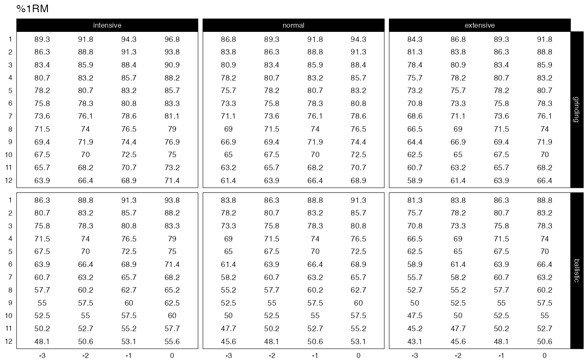

Family of functions to create progression tables
Source:R/generate-progression-table.R, R/progression-table-DI.R, R/progression-table-RIR.R, and 4 more
progression_table.RdFamily of functions to create progression tables
Usage
generate_progression_table(
progression_table,
type = c("grinding", "ballistic"),
volume = c("intensive", "normal", "extensive"),
reps = 1:12,
step = seq(-3, 0, 1),
...
)
progression_DI(
reps,
step = 0,
volume = "normal",
adjustment = 0,
type = "grinding",
mfactor = NULL,
step_increment = -0.025,
volume_increment = step_increment,
...
)
progression_RIR(
reps,
step = 0,
volume = "normal",
adjustment = 0,
type = "grinding",
mfactor = NULL,
step_increment = 1,
volume_increment = step_increment,
...
)
progression_RIR_increment(
reps,
step = 0,
volume = "normal",
adjustment = 0,
type = "grinding",
mfactor = NULL,
...
)
progression_perc_MR(
reps,
step = 0,
volume = "normal",
adjustment = 0,
type = "grinding",
mfactor = NULL,
step_increment = -0.1,
volume_increment = -0.2,
...
)
progression_perc_MR_variable(
reps,
step = 0,
volume = "normal",
adjustment = 0,
type = "grinding",
mfactor = NULL,
...
)
progression_perc_drop(
reps,
step = 0,
volume = "normal",
adjustment = 0,
type = "grinding",
mfactor = NULL,
...
)
progression_rel_int(
reps,
step = 0,
volume = "normal",
adjustment = 0,
type = "grinding",
mfactor = NULL,
step_increment = -0.05,
volume_increment = -0.075,
...
)Arguments
- progression_table
Progression table function to use
- type
Character vector. Type of max rep table. Options are grinding (Default) and ballistic.
- volume
Character vector: 'intensive', 'normal' (Default), or 'extensive'
- reps
Numeric vector. Number of repetition to be performed
- step
Numeric vector. Progression step. Default is 0. Use negative numbers (i.e., -1, -2)
- ...
Extra arguments forwarded to
adj_perc_1RMfamily of functions Use this to supply different parameter value (i.e.,k = 0.035), or model function (i.e.,max_perc_1RM_func = max_perc_1RM_linear)- adjustment
Numeric vector. Additional post adjustment applied to sets. Default is none (value depends on the method).
- mfactor
Numeric vector. Factor to adjust max rep table. Used instead of
typeparameter, unlessNULL- step_increment, volume_increment
Numeric vector. Used to adjust specific progression methods
Functions
generate_progression_table(): Generates progression tablesprogression_DI(): Deducted Intensity progression table. This simplest progression table simply deducts intensity to progress. Adjust this deducted by using thedeductionparameter (default is equal to -0.025)progression_RIR(): Constant RIR Increment progression table. This variant have constant RIR increment across reps from phases to phases and RIR difference between extensive, normal, and intensive schemes. Usestep_incrementandvolume_incrementparameters to utilize needed incrementsprogression_RIR_increment(): RIR Increment progression table (see Strength Training Manual)progression_perc_MR(): Constant %MR Step progression table. This variant have constant %MR increment across reps from phases to phases and %MR difference between extensive, normal, and intensive schemes. Usestep_incrementandvolume_incrementparameters to utilize needed incrementsprogression_perc_MR_variable(): Variable %MR Step progression tableprogression_perc_drop(): Perc Drop progression table (see Strength Training Manual)progression_rel_int(): Relative Intensity progression table. Usestep_incrementandvolume_incrementparameters to utilize needed increments
References
Jovanović M. 2020. Strength Training Manual: The Agile Periodization Approach.
Independently published.Jovanović M. 2020. Strength Training Manual: The Agile Periodization Approach.
Independently published.Examples
generate_progression_table(progression_RIR)
#> type volume reps step adjustment perc_1RM
#> 1 grinding intensive 1 -3 3 0.8824568
#> 2 ballistic intensive 1 -3 3 0.7896399
#> 3 grinding normal 1 -3 4 0.8572653
#> 4 ballistic normal 1 -3 4 0.7501875
#> 5 grinding extensive 1 -3 5 0.8334722
#> 6 ballistic extensive 1 -3 5 0.7144899
#> 7 grinding intensive 2 -3 3 0.8572653
#> 8 ballistic intensive 2 -3 3 0.7501875
#> 9 grinding normal 2 -3 4 0.8334722
#> 10 ballistic normal 2 -3 4 0.7144899
#> 11 grinding extensive 2 -3 5 0.8109642
#> 12 ballistic extensive 2 -3 5 0.6820352
#> 13 grinding intensive 3 -3 3 0.8334722
#> 14 ballistic intensive 3 -3 3 0.7144899
#> 15 grinding normal 3 -3 4 0.8109642
#> 16 ballistic normal 3 -3 4 0.6820352
#> 17 grinding extensive 3 -3 5 0.7896399
#> 18 ballistic extensive 3 -3 5 0.6524008
#> 19 grinding intensive 4 -3 3 0.8109642
#> 20 ballistic intensive 4 -3 3 0.6820352
#> 21 grinding normal 4 -3 4 0.7896399
#> 22 ballistic normal 4 -3 4 0.6524008
#> 23 grinding extensive 4 -3 5 0.7694083
#> 24 ballistic extensive 4 -3 5 0.6252345
#> 25 grinding intensive 5 -3 3 0.7896399
#> 26 ballistic intensive 5 -3 3 0.6524008
#> 27 grinding normal 5 -3 4 0.7694083
#> 28 ballistic normal 5 -3 4 0.6252345
#> 29 grinding extensive 5 -3 5 0.7501875
#> 30 ballistic extensive 5 -3 5 0.6002401
#> 31 grinding intensive 6 -3 3 0.7694083
#> 32 ballistic intensive 6 -3 3 0.6252345
#> 33 grinding normal 6 -3 4 0.7501875
#> 34 ballistic normal 6 -3 4 0.6002401
#> 35 grinding extensive 6 -3 5 0.7319037
#> 36 ballistic extensive 6 -3 5 0.5771673
#> 37 grinding intensive 7 -3 3 0.7501875
#> 38 ballistic intensive 7 -3 3 0.6002401
#> 39 grinding normal 7 -3 4 0.7319037
#> 40 ballistic normal 7 -3 4 0.5771673
#> 41 grinding extensive 7 -3 5 0.7144899
#> 42 ballistic extensive 7 -3 5 0.5558026
#> 43 grinding intensive 8 -3 3 0.7319037
#> 44 ballistic intensive 8 -3 3 0.5771673
#> 45 grinding normal 8 -3 4 0.7144899
#> 46 ballistic normal 8 -3 4 0.5558026
#> 47 grinding extensive 8 -3 5 0.6978854
#> 48 ballistic extensive 8 -3 5 0.5359631
#> 49 grinding intensive 9 -3 3 0.7144899
#> 50 ballistic intensive 9 -3 3 0.5558026
#> 51 grinding normal 9 -3 4 0.6978854
#> 52 ballistic normal 9 -3 4 0.5359631
#> 53 grinding extensive 9 -3 5 0.6820352
#> 54 ballistic extensive 9 -3 5 0.5174912
#> 55 grinding intensive 10 -3 3 0.6978854
#> 56 ballistic intensive 10 -3 3 0.5359631
#> 57 grinding normal 10 -3 4 0.6820352
#> 58 ballistic normal 10 -3 4 0.5174912
#> 59 grinding extensive 10 -3 5 0.6668890
#> 60 ballistic extensive 10 -3 5 0.5002501
#> 61 grinding intensive 11 -3 3 0.6820352
#> 62 ballistic intensive 11 -3 3 0.5174912
#> 63 grinding normal 11 -3 4 0.6668890
#> 64 ballistic normal 11 -3 4 0.5002501
#> 65 grinding extensive 11 -3 5 0.6524008
#> 66 ballistic extensive 11 -3 5 0.4841208
#> 67 grinding intensive 12 -3 3 0.6668890
#> 68 ballistic intensive 12 -3 3 0.5002501
#> 69 grinding normal 12 -3 4 0.6524008
#> 70 ballistic normal 12 -3 4 0.4841208
#> 71 grinding extensive 12 -3 5 0.6385288
#> 72 ballistic extensive 12 -3 5 0.4689992
#> 73 grinding intensive 1 -2 2 0.9091736
#> 74 ballistic intensive 1 -2 2 0.8334722
#> 75 grinding normal 1 -2 3 0.8824568
#> 76 ballistic normal 1 -2 3 0.7896399
#> 77 grinding extensive 1 -2 4 0.8572653
#> 78 ballistic extensive 1 -2 4 0.7501875
#> 79 grinding intensive 2 -2 2 0.8824568
#> 80 ballistic intensive 2 -2 2 0.7896399
#> 81 grinding normal 2 -2 3 0.8572653
#> 82 ballistic normal 2 -2 3 0.7501875
#> 83 grinding extensive 2 -2 4 0.8334722
#> 84 ballistic extensive 2 -2 4 0.7144899
#> 85 grinding intensive 3 -2 2 0.8572653
#> 86 ballistic intensive 3 -2 2 0.7501875
#> 87 grinding normal 3 -2 3 0.8334722
#> 88 ballistic normal 3 -2 3 0.7144899
#> 89 grinding extensive 3 -2 4 0.8109642
#> 90 ballistic extensive 3 -2 4 0.6820352
#> 91 grinding intensive 4 -2 2 0.8334722
#> 92 ballistic intensive 4 -2 2 0.7144899
#> 93 grinding normal 4 -2 3 0.8109642
#> 94 ballistic normal 4 -2 3 0.6820352
#> 95 grinding extensive 4 -2 4 0.7896399
#> 96 ballistic extensive 4 -2 4 0.6524008
#> 97 grinding intensive 5 -2 2 0.8109642
#> 98 ballistic intensive 5 -2 2 0.6820352
#> 99 grinding normal 5 -2 3 0.7896399
#> 100 ballistic normal 5 -2 3 0.6524008
#> 101 grinding extensive 5 -2 4 0.7694083
#> 102 ballistic extensive 5 -2 4 0.6252345
#> 103 grinding intensive 6 -2 2 0.7896399
#> 104 ballistic intensive 6 -2 2 0.6524008
#> 105 grinding normal 6 -2 3 0.7694083
#> 106 ballistic normal 6 -2 3 0.6252345
#> 107 grinding extensive 6 -2 4 0.7501875
#> 108 ballistic extensive 6 -2 4 0.6002401
#> 109 grinding intensive 7 -2 2 0.7694083
#> 110 ballistic intensive 7 -2 2 0.6252345
#> 111 grinding normal 7 -2 3 0.7501875
#> 112 ballistic normal 7 -2 3 0.6002401
#> 113 grinding extensive 7 -2 4 0.7319037
#> 114 ballistic extensive 7 -2 4 0.5771673
#> 115 grinding intensive 8 -2 2 0.7501875
#> 116 ballistic intensive 8 -2 2 0.6002401
#> 117 grinding normal 8 -2 3 0.7319037
#> 118 ballistic normal 8 -2 3 0.5771673
#> 119 grinding extensive 8 -2 4 0.7144899
#> 120 ballistic extensive 8 -2 4 0.5558026
#> 121 grinding intensive 9 -2 2 0.7319037
#> 122 ballistic intensive 9 -2 2 0.5771673
#> 123 grinding normal 9 -2 3 0.7144899
#> 124 ballistic normal 9 -2 3 0.5558026
#> 125 grinding extensive 9 -2 4 0.6978854
#> 126 ballistic extensive 9 -2 4 0.5359631
#> 127 grinding intensive 10 -2 2 0.7144899
#> 128 ballistic intensive 10 -2 2 0.5558026
#> 129 grinding normal 10 -2 3 0.6978854
#> 130 ballistic normal 10 -2 3 0.5359631
#> 131 grinding extensive 10 -2 4 0.6820352
#> 132 ballistic extensive 10 -2 4 0.5174912
#> 133 grinding intensive 11 -2 2 0.6978854
#> 134 ballistic intensive 11 -2 2 0.5359631
#> 135 grinding normal 11 -2 3 0.6820352
#> 136 ballistic normal 11 -2 3 0.5174912
#> 137 grinding extensive 11 -2 4 0.6668890
#> 138 ballistic extensive 11 -2 4 0.5002501
#> 139 grinding intensive 12 -2 2 0.6820352
#> 140 ballistic intensive 12 -2 2 0.5174912
#> 141 grinding normal 12 -2 3 0.6668890
#> 142 ballistic normal 12 -2 3 0.5002501
#> 143 grinding extensive 12 -2 4 0.6524008
#> 144 ballistic extensive 12 -2 4 0.4841208
#> 145 grinding intensive 1 -1 1 0.9375586
#> 146 ballistic intensive 1 -1 1 0.8824568
#> 147 grinding normal 1 -1 2 0.9091736
#> 148 ballistic normal 1 -1 2 0.8334722
#> 149 grinding extensive 1 -1 3 0.8824568
#> 150 ballistic extensive 1 -1 3 0.7896399
#> 151 grinding intensive 2 -1 1 0.9091736
#> 152 ballistic intensive 2 -1 1 0.8334722
#> 153 grinding normal 2 -1 2 0.8824568
#> 154 ballistic normal 2 -1 2 0.7896399
#> 155 grinding extensive 2 -1 3 0.8572653
#> 156 ballistic extensive 2 -1 3 0.7501875
#> 157 grinding intensive 3 -1 1 0.8824568
#> 158 ballistic intensive 3 -1 1 0.7896399
#> 159 grinding normal 3 -1 2 0.8572653
#> 160 ballistic normal 3 -1 2 0.7501875
#> 161 grinding extensive 3 -1 3 0.8334722
#> 162 ballistic extensive 3 -1 3 0.7144899
#> 163 grinding intensive 4 -1 1 0.8572653
#> 164 ballistic intensive 4 -1 1 0.7501875
#> 165 grinding normal 4 -1 2 0.8334722
#> 166 ballistic normal 4 -1 2 0.7144899
#> 167 grinding extensive 4 -1 3 0.8109642
#> 168 ballistic extensive 4 -1 3 0.6820352
#> 169 grinding intensive 5 -1 1 0.8334722
#> 170 ballistic intensive 5 -1 1 0.7144899
#> 171 grinding normal 5 -1 2 0.8109642
#> 172 ballistic normal 5 -1 2 0.6820352
#> 173 grinding extensive 5 -1 3 0.7896399
#> 174 ballistic extensive 5 -1 3 0.6524008
#> 175 grinding intensive 6 -1 1 0.8109642
#> 176 ballistic intensive 6 -1 1 0.6820352
#> 177 grinding normal 6 -1 2 0.7896399
#> 178 ballistic normal 6 -1 2 0.6524008
#> 179 grinding extensive 6 -1 3 0.7694083
#> 180 ballistic extensive 6 -1 3 0.6252345
#> 181 grinding intensive 7 -1 1 0.7896399
#> 182 ballistic intensive 7 -1 1 0.6524008
#> 183 grinding normal 7 -1 2 0.7694083
#> 184 ballistic normal 7 -1 2 0.6252345
#> 185 grinding extensive 7 -1 3 0.7501875
#> 186 ballistic extensive 7 -1 3 0.6002401
#> 187 grinding intensive 8 -1 1 0.7694083
#> 188 ballistic intensive 8 -1 1 0.6252345
#> 189 grinding normal 8 -1 2 0.7501875
#> 190 ballistic normal 8 -1 2 0.6002401
#> 191 grinding extensive 8 -1 3 0.7319037
#> 192 ballistic extensive 8 -1 3 0.5771673
#> 193 grinding intensive 9 -1 1 0.7501875
#> 194 ballistic intensive 9 -1 1 0.6002401
#> 195 grinding normal 9 -1 2 0.7319037
#> 196 ballistic normal 9 -1 2 0.5771673
#> 197 grinding extensive 9 -1 3 0.7144899
#> 198 ballistic extensive 9 -1 3 0.5558026
#> 199 grinding intensive 10 -1 1 0.7319037
#> 200 ballistic intensive 10 -1 1 0.5771673
#> 201 grinding normal 10 -1 2 0.7144899
#> 202 ballistic normal 10 -1 2 0.5558026
#> 203 grinding extensive 10 -1 3 0.6978854
#> 204 ballistic extensive 10 -1 3 0.5359631
#> 205 grinding intensive 11 -1 1 0.7144899
#> 206 ballistic intensive 11 -1 1 0.5558026
#> 207 grinding normal 11 -1 2 0.6978854
#> 208 ballistic normal 11 -1 2 0.5359631
#> 209 grinding extensive 11 -1 3 0.6820352
#> 210 ballistic extensive 11 -1 3 0.5174912
#> 211 grinding intensive 12 -1 1 0.6978854
#> 212 ballistic intensive 12 -1 1 0.5359631
#> 213 grinding normal 12 -1 2 0.6820352
#> 214 ballistic normal 12 -1 2 0.5174912
#> 215 grinding extensive 12 -1 3 0.6668890
#> 216 ballistic extensive 12 -1 3 0.5002501
#> 217 grinding intensive 1 0 0 0.9677732
#> 218 ballistic intensive 1 0 0 0.9375586
#> 219 grinding normal 1 0 1 0.9375586
#> 220 ballistic normal 1 0 1 0.8824568
#> 221 grinding extensive 1 0 2 0.9091736
#> 222 ballistic extensive 1 0 2 0.8334722
#> 223 grinding intensive 2 0 0 0.9375586
#> 224 ballistic intensive 2 0 0 0.8824568
#> 225 grinding normal 2 0 1 0.9091736
#> 226 ballistic normal 2 0 1 0.8334722
#> 227 grinding extensive 2 0 2 0.8824568
#> 228 ballistic extensive 2 0 2 0.7896399
#> 229 grinding intensive 3 0 0 0.9091736
#> 230 ballistic intensive 3 0 0 0.8334722
#> 231 grinding normal 3 0 1 0.8824568
#> 232 ballistic normal 3 0 1 0.7896399
#> 233 grinding extensive 3 0 2 0.8572653
#> 234 ballistic extensive 3 0 2 0.7501875
#> 235 grinding intensive 4 0 0 0.8824568
#> 236 ballistic intensive 4 0 0 0.7896399
#> 237 grinding normal 4 0 1 0.8572653
#> 238 ballistic normal 4 0 1 0.7501875
#> 239 grinding extensive 4 0 2 0.8334722
#> 240 ballistic extensive 4 0 2 0.7144899
#> 241 grinding intensive 5 0 0 0.8572653
#> 242 ballistic intensive 5 0 0 0.7501875
#> 243 grinding normal 5 0 1 0.8334722
#> 244 ballistic normal 5 0 1 0.7144899
#> 245 grinding extensive 5 0 2 0.8109642
#> 246 ballistic extensive 5 0 2 0.6820352
#> 247 grinding intensive 6 0 0 0.8334722
#> 248 ballistic intensive 6 0 0 0.7144899
#> 249 grinding normal 6 0 1 0.8109642
#> 250 ballistic normal 6 0 1 0.6820352
#> 251 grinding extensive 6 0 2 0.7896399
#> 252 ballistic extensive 6 0 2 0.6524008
#> 253 grinding intensive 7 0 0 0.8109642
#> 254 ballistic intensive 7 0 0 0.6820352
#> 255 grinding normal 7 0 1 0.7896399
#> 256 ballistic normal 7 0 1 0.6524008
#> 257 grinding extensive 7 0 2 0.7694083
#> 258 ballistic extensive 7 0 2 0.6252345
#> 259 grinding intensive 8 0 0 0.7896399
#> 260 ballistic intensive 8 0 0 0.6524008
#> 261 grinding normal 8 0 1 0.7694083
#> 262 ballistic normal 8 0 1 0.6252345
#> 263 grinding extensive 8 0 2 0.7501875
#> 264 ballistic extensive 8 0 2 0.6002401
#> 265 grinding intensive 9 0 0 0.7694083
#> 266 ballistic intensive 9 0 0 0.6252345
#> 267 grinding normal 9 0 1 0.7501875
#> 268 ballistic normal 9 0 1 0.6002401
#> 269 grinding extensive 9 0 2 0.7319037
#> 270 ballistic extensive 9 0 2 0.5771673
#> 271 grinding intensive 10 0 0 0.7501875
#> 272 ballistic intensive 10 0 0 0.6002401
#> 273 grinding normal 10 0 1 0.7319037
#> 274 ballistic normal 10 0 1 0.5771673
#> 275 grinding extensive 10 0 2 0.7144899
#> 276 ballistic extensive 10 0 2 0.5558026
#> 277 grinding intensive 11 0 0 0.7319037
#> 278 ballistic intensive 11 0 0 0.5771673
#> 279 grinding normal 11 0 1 0.7144899
#> 280 ballistic normal 11 0 1 0.5558026
#> 281 grinding extensive 11 0 2 0.6978854
#> 282 ballistic extensive 11 0 2 0.5359631
#> 283 grinding intensive 12 0 0 0.7144899
#> 284 ballistic intensive 12 0 0 0.5558026
#> 285 grinding normal 12 0 1 0.6978854
#> 286 ballistic normal 12 0 1 0.5359631
#> 287 grinding extensive 12 0 2 0.6820352
#> 288 ballistic extensive 12 0 2 0.5174912
generate_progression_table(
progression_RIR,
type = "grinding",
volume = "normal",
step_increment = 2
)
#> type volume reps step adjustment perc_1RM
#> 1 grinding normal 1 -3 8 0.7694083
#> 2 grinding normal 2 -3 8 0.7501875
#> 3 grinding normal 3 -3 8 0.7319037
#> 4 grinding normal 4 -3 8 0.7144899
#> 5 grinding normal 5 -3 8 0.6978854
#> 6 grinding normal 6 -3 8 0.6820352
#> 7 grinding normal 7 -3 8 0.6668890
#> 8 grinding normal 8 -3 8 0.6524008
#> 9 grinding normal 9 -3 8 0.6385288
#> 10 grinding normal 10 -3 8 0.6252345
#> 11 grinding normal 11 -3 8 0.6124824
#> 12 grinding normal 12 -3 8 0.6002401
#> 13 grinding normal 1 -2 6 0.8109642
#> 14 grinding normal 2 -2 6 0.7896399
#> 15 grinding normal 3 -2 6 0.7694083
#> 16 grinding normal 4 -2 6 0.7501875
#> 17 grinding normal 5 -2 6 0.7319037
#> 18 grinding normal 6 -2 6 0.7144899
#> 19 grinding normal 7 -2 6 0.6978854
#> 20 grinding normal 8 -2 6 0.6820352
#> 21 grinding normal 9 -2 6 0.6668890
#> 22 grinding normal 10 -2 6 0.6524008
#> 23 grinding normal 11 -2 6 0.6385288
#> 24 grinding normal 12 -2 6 0.6252345
#> 25 grinding normal 1 -1 4 0.8572653
#> 26 grinding normal 2 -1 4 0.8334722
#> 27 grinding normal 3 -1 4 0.8109642
#> 28 grinding normal 4 -1 4 0.7896399
#> 29 grinding normal 5 -1 4 0.7694083
#> 30 grinding normal 6 -1 4 0.7501875
#> 31 grinding normal 7 -1 4 0.7319037
#> 32 grinding normal 8 -1 4 0.7144899
#> 33 grinding normal 9 -1 4 0.6978854
#> 34 grinding normal 10 -1 4 0.6820352
#> 35 grinding normal 11 -1 4 0.6668890
#> 36 grinding normal 12 -1 4 0.6524008
#> 37 grinding normal 1 0 2 0.9091736
#> 38 grinding normal 2 0 2 0.8824568
#> 39 grinding normal 3 0 2 0.8572653
#> 40 grinding normal 4 0 2 0.8334722
#> 41 grinding normal 5 0 2 0.8109642
#> 42 grinding normal 6 0 2 0.7896399
#> 43 grinding normal 7 0 2 0.7694083
#> 44 grinding normal 8 0 2 0.7501875
#> 45 grinding normal 9 0 2 0.7319037
#> 46 grinding normal 10 0 2 0.7144899
#> 47 grinding normal 11 0 2 0.6978854
#> 48 grinding normal 12 0 2 0.6820352
# Create progression table using specific reps-max table and k value
generate_progression_table(
progression_RIR,
max_perc_1RM_func = max_perc_1RM_modified_epley,
kmod = 0.0388
)
#> type volume reps step adjustment perc_1RM
#> 1 grinding intensive 1 -3 3 0.8957363
#> 2 ballistic intensive 1 -3 3 0.7864108
#> 3 grinding normal 1 -3 4 0.8656510
#> 4 ballistic normal 1 -3 4 0.7411800
#> 5 grinding extensive 1 -3 5 0.8375209
#> 6 ballistic extensive 1 -3 5 0.7008691
#> 7 grinding intensive 2 -3 3 0.8656510
#> 8 ballistic intensive 2 -3 3 0.7411800
#> 9 grinding normal 2 -3 4 0.8375209
#> 10 ballistic normal 2 -3 4 0.7008691
#> 11 grinding extensive 2 -3 5 0.8111616
#> 12 ballistic extensive 2 -3 5 0.6647168
#> 13 grinding intensive 3 -3 3 0.8375209
#> 14 ballistic intensive 3 -3 3 0.7008691
#> 15 grinding normal 3 -3 4 0.8111616
#> 16 ballistic normal 3 -3 4 0.6647168
#> 17 grinding extensive 3 -3 5 0.7864108
#> 18 ballistic extensive 3 -3 5 0.6321113
#> 19 grinding intensive 4 -3 3 0.8111616
#> 20 ballistic intensive 4 -3 3 0.6647168
#> 21 grinding normal 4 -3 4 0.7864108
#> 22 ballistic normal 4 -3 4 0.6321113
#> 23 grinding extensive 4 -3 5 0.7631258
#> 24 ballistic extensive 4 -3 5 0.6025548
#> 25 grinding intensive 5 -3 3 0.7864108
#> 26 ballistic intensive 5 -3 3 0.6321113
#> 27 grinding normal 5 -3 4 0.7631258
#> 28 ballistic normal 5 -3 4 0.6025548
#> 29 grinding extensive 5 -3 5 0.7411800
#> 30 ballistic extensive 5 -3 5 0.5756390
#> 31 grinding intensive 6 -3 3 0.7631258
#> 32 ballistic intensive 6 -3 3 0.6025548
#> 33 grinding normal 6 -3 4 0.7411800
#> 34 ballistic normal 6 -3 4 0.5756390
#> 35 grinding extensive 6 -3 5 0.7204611
#> 36 ballistic extensive 6 -3 5 0.5510249
#> 37 grinding intensive 7 -3 3 0.7411800
#> 38 ballistic intensive 7 -3 3 0.5756390
#> 39 grinding normal 7 -3 4 0.7204611
#> 40 ballistic normal 7 -3 4 0.5510249
#> 41 grinding extensive 7 -3 5 0.7008691
#> 42 ballistic extensive 7 -3 5 0.5284295
#> 43 grinding intensive 8 -3 3 0.7204611
#> 44 ballistic intensive 8 -3 3 0.5510249
#> 45 grinding normal 8 -3 4 0.7008691
#> 46 ballistic normal 8 -3 4 0.5284295
#> 47 grinding extensive 8 -3 5 0.6823144
#> 48 ballistic extensive 8 -3 5 0.5076142
#> 49 grinding intensive 9 -3 3 0.7008691
#> 50 ballistic intensive 9 -3 3 0.5284295
#> 51 grinding normal 9 -3 4 0.6823144
#> 52 ballistic normal 9 -3 4 0.5076142
#> 53 grinding extensive 9 -3 5 0.6647168
#> 54 ballistic extensive 9 -3 5 0.4883766
#> 55 grinding intensive 10 -3 3 0.6823144
#> 56 ballistic intensive 10 -3 3 0.5076142
#> 57 grinding normal 10 -3 4 0.6647168
#> 58 ballistic normal 10 -3 4 0.4883766
#> 59 grinding extensive 10 -3 5 0.6480041
#> 60 ballistic extensive 10 -3 5 0.4705439
#> 61 grinding intensive 11 -3 3 0.6647168
#> 62 ballistic intensive 11 -3 3 0.4883766
#> 63 grinding normal 11 -3 4 0.6480041
#> 64 ballistic normal 11 -3 4 0.4705439
#> 65 grinding extensive 11 -3 5 0.6321113
#> 66 ballistic extensive 11 -3 5 0.4539677
#> 67 grinding intensive 12 -3 3 0.6480041
#> 68 ballistic intensive 12 -3 3 0.4705439
#> 69 grinding normal 12 -3 4 0.6321113
#> 70 ballistic normal 12 -3 4 0.4539677
#> 71 grinding extensive 12 -3 5 0.6169793
#> 72 ballistic extensive 12 -3 5 0.4385196
#> 73 grinding intensive 1 -2 2 0.9279881
#> 74 ballistic intensive 1 -2 2 0.8375209
#> 75 grinding normal 1 -2 3 0.8957363
#> 76 ballistic normal 1 -2 3 0.7864108
#> 77 grinding extensive 1 -2 4 0.8656510
#> 78 ballistic extensive 1 -2 4 0.7411800
#> 79 grinding intensive 2 -2 2 0.8957363
#> 80 ballistic intensive 2 -2 2 0.7864108
#> 81 grinding normal 2 -2 3 0.8656510
#> 82 ballistic normal 2 -2 3 0.7411800
#> 83 grinding extensive 2 -2 4 0.8375209
#> 84 ballistic extensive 2 -2 4 0.7008691
#> 85 grinding intensive 3 -2 2 0.8656510
#> 86 ballistic intensive 3 -2 2 0.7411800
#> 87 grinding normal 3 -2 3 0.8375209
#> 88 ballistic normal 3 -2 3 0.7008691
#> 89 grinding extensive 3 -2 4 0.8111616
#> 90 ballistic extensive 3 -2 4 0.6647168
#> 91 grinding intensive 4 -2 2 0.8375209
#> 92 ballistic intensive 4 -2 2 0.7008691
#> 93 grinding normal 4 -2 3 0.8111616
#> 94 ballistic normal 4 -2 3 0.6647168
#> 95 grinding extensive 4 -2 4 0.7864108
#> 96 ballistic extensive 4 -2 4 0.6321113
#> 97 grinding intensive 5 -2 2 0.8111616
#> 98 ballistic intensive 5 -2 2 0.6647168
#> 99 grinding normal 5 -2 3 0.7864108
#> 100 ballistic normal 5 -2 3 0.6321113
#> 101 grinding extensive 5 -2 4 0.7631258
#> 102 ballistic extensive 5 -2 4 0.6025548
#> 103 grinding intensive 6 -2 2 0.7864108
#> 104 ballistic intensive 6 -2 2 0.6321113
#> 105 grinding normal 6 -2 3 0.7631258
#> 106 ballistic normal 6 -2 3 0.6025548
#> 107 grinding extensive 6 -2 4 0.7411800
#> 108 ballistic extensive 6 -2 4 0.5756390
#> 109 grinding intensive 7 -2 2 0.7631258
#> 110 ballistic intensive 7 -2 2 0.6025548
#> 111 grinding normal 7 -2 3 0.7411800
#> 112 ballistic normal 7 -2 3 0.5756390
#> 113 grinding extensive 7 -2 4 0.7204611
#> 114 ballistic extensive 7 -2 4 0.5510249
#> 115 grinding intensive 8 -2 2 0.7411800
#> 116 ballistic intensive 8 -2 2 0.5756390
#> 117 grinding normal 8 -2 3 0.7204611
#> 118 ballistic normal 8 -2 3 0.5510249
#> 119 grinding extensive 8 -2 4 0.7008691
#> 120 ballistic extensive 8 -2 4 0.5284295
#> 121 grinding intensive 9 -2 2 0.7204611
#> 122 ballistic intensive 9 -2 2 0.5510249
#> 123 grinding normal 9 -2 3 0.7008691
#> 124 ballistic normal 9 -2 3 0.5284295
#> 125 grinding extensive 9 -2 4 0.6823144
#> 126 ballistic extensive 9 -2 4 0.5076142
#> 127 grinding intensive 10 -2 2 0.7008691
#> 128 ballistic intensive 10 -2 2 0.5284295
#> 129 grinding normal 10 -2 3 0.6823144
#> 130 ballistic normal 10 -2 3 0.5076142
#> 131 grinding extensive 10 -2 4 0.6647168
#> 132 ballistic extensive 10 -2 4 0.4883766
#> 133 grinding intensive 11 -2 2 0.6823144
#> 134 ballistic intensive 11 -2 2 0.5076142
#> 135 grinding normal 11 -2 3 0.6647168
#> 136 ballistic normal 11 -2 3 0.4883766
#> 137 grinding extensive 11 -2 4 0.6480041
#> 138 ballistic extensive 11 -2 4 0.4705439
#> 139 grinding intensive 12 -2 2 0.6647168
#> 140 ballistic intensive 12 -2 2 0.4883766
#> 141 grinding normal 12 -2 3 0.6480041
#> 142 ballistic normal 12 -2 3 0.4705439
#> 143 grinding extensive 12 -2 4 0.6321113
#> 144 ballistic extensive 12 -2 4 0.4539677
#> 145 grinding intensive 1 -1 1 0.9626492
#> 146 ballistic intensive 1 -1 1 0.8957363
#> 147 grinding normal 1 -1 2 0.9279881
#> 148 ballistic normal 1 -1 2 0.8375209
#> 149 grinding extensive 1 -1 3 0.8957363
#> 150 ballistic extensive 1 -1 3 0.7864108
#> 151 grinding intensive 2 -1 1 0.9279881
#> 152 ballistic intensive 2 -1 1 0.8375209
#> 153 grinding normal 2 -1 2 0.8957363
#> 154 ballistic normal 2 -1 2 0.7864108
#> 155 grinding extensive 2 -1 3 0.8656510
#> 156 ballistic extensive 2 -1 3 0.7411800
#> 157 grinding intensive 3 -1 1 0.8957363
#> 158 ballistic intensive 3 -1 1 0.7864108
#> 159 grinding normal 3 -1 2 0.8656510
#> 160 ballistic normal 3 -1 2 0.7411800
#> 161 grinding extensive 3 -1 3 0.8375209
#> 162 ballistic extensive 3 -1 3 0.7008691
#> 163 grinding intensive 4 -1 1 0.8656510
#> 164 ballistic intensive 4 -1 1 0.7411800
#> 165 grinding normal 4 -1 2 0.8375209
#> 166 ballistic normal 4 -1 2 0.7008691
#> 167 grinding extensive 4 -1 3 0.8111616
#> 168 ballistic extensive 4 -1 3 0.6647168
#> 169 grinding intensive 5 -1 1 0.8375209
#> 170 ballistic intensive 5 -1 1 0.7008691
#> 171 grinding normal 5 -1 2 0.8111616
#> 172 ballistic normal 5 -1 2 0.6647168
#> 173 grinding extensive 5 -1 3 0.7864108
#> 174 ballistic extensive 5 -1 3 0.6321113
#> 175 grinding intensive 6 -1 1 0.8111616
#> 176 ballistic intensive 6 -1 1 0.6647168
#> 177 grinding normal 6 -1 2 0.7864108
#> 178 ballistic normal 6 -1 2 0.6321113
#> 179 grinding extensive 6 -1 3 0.7631258
#> 180 ballistic extensive 6 -1 3 0.6025548
#> 181 grinding intensive 7 -1 1 0.7864108
#> 182 ballistic intensive 7 -1 1 0.6321113
#> 183 grinding normal 7 -1 2 0.7631258
#> 184 ballistic normal 7 -1 2 0.6025548
#> 185 grinding extensive 7 -1 3 0.7411800
#> 186 ballistic extensive 7 -1 3 0.5756390
#> 187 grinding intensive 8 -1 1 0.7631258
#> 188 ballistic intensive 8 -1 1 0.6025548
#> 189 grinding normal 8 -1 2 0.7411800
#> 190 ballistic normal 8 -1 2 0.5756390
#> 191 grinding extensive 8 -1 3 0.7204611
#> 192 ballistic extensive 8 -1 3 0.5510249
#> 193 grinding intensive 9 -1 1 0.7411800
#> 194 ballistic intensive 9 -1 1 0.5756390
#> 195 grinding normal 9 -1 2 0.7204611
#> 196 ballistic normal 9 -1 2 0.5510249
#> 197 grinding extensive 9 -1 3 0.7008691
#> 198 ballistic extensive 9 -1 3 0.5284295
#> 199 grinding intensive 10 -1 1 0.7204611
#> 200 ballistic intensive 10 -1 1 0.5510249
#> 201 grinding normal 10 -1 2 0.7008691
#> 202 ballistic normal 10 -1 2 0.5284295
#> 203 grinding extensive 10 -1 3 0.6823144
#> 204 ballistic extensive 10 -1 3 0.5076142
#> 205 grinding intensive 11 -1 1 0.7008691
#> 206 ballistic intensive 11 -1 1 0.5284295
#> 207 grinding normal 11 -1 2 0.6823144
#> 208 ballistic normal 11 -1 2 0.5076142
#> 209 grinding extensive 11 -1 3 0.6647168
#> 210 ballistic extensive 11 -1 3 0.4883766
#> 211 grinding intensive 12 -1 1 0.6823144
#> 212 ballistic intensive 12 -1 1 0.5076142
#> 213 grinding normal 12 -1 2 0.6647168
#> 214 ballistic normal 12 -1 2 0.4883766
#> 215 grinding extensive 12 -1 3 0.6480041
#> 216 ballistic extensive 12 -1 3 0.4705439
#> 217 grinding intensive 1 0 0 1.0000000
#> 218 ballistic intensive 1 0 0 0.9626492
#> 219 grinding normal 1 0 1 0.9626492
#> 220 ballistic normal 1 0 1 0.8957363
#> 221 grinding extensive 1 0 2 0.9279881
#> 222 ballistic extensive 1 0 2 0.8375209
#> 223 grinding intensive 2 0 0 0.9626492
#> 224 ballistic intensive 2 0 0 0.8957363
#> 225 grinding normal 2 0 1 0.9279881
#> 226 ballistic normal 2 0 1 0.8375209
#> 227 grinding extensive 2 0 2 0.8957363
#> 228 ballistic extensive 2 0 2 0.7864108
#> 229 grinding intensive 3 0 0 0.9279881
#> 230 ballistic intensive 3 0 0 0.8375209
#> 231 grinding normal 3 0 1 0.8957363
#> 232 ballistic normal 3 0 1 0.7864108
#> 233 grinding extensive 3 0 2 0.8656510
#> 234 ballistic extensive 3 0 2 0.7411800
#> 235 grinding intensive 4 0 0 0.8957363
#> 236 ballistic intensive 4 0 0 0.7864108
#> 237 grinding normal 4 0 1 0.8656510
#> 238 ballistic normal 4 0 1 0.7411800
#> 239 grinding extensive 4 0 2 0.8375209
#> 240 ballistic extensive 4 0 2 0.7008691
#> 241 grinding intensive 5 0 0 0.8656510
#> 242 ballistic intensive 5 0 0 0.7411800
#> 243 grinding normal 5 0 1 0.8375209
#> 244 ballistic normal 5 0 1 0.7008691
#> 245 grinding extensive 5 0 2 0.8111616
#> 246 ballistic extensive 5 0 2 0.6647168
#> 247 grinding intensive 6 0 0 0.8375209
#> 248 ballistic intensive 6 0 0 0.7008691
#> 249 grinding normal 6 0 1 0.8111616
#> 250 ballistic normal 6 0 1 0.6647168
#> 251 grinding extensive 6 0 2 0.7864108
#> 252 ballistic extensive 6 0 2 0.6321113
#> 253 grinding intensive 7 0 0 0.8111616
#> 254 ballistic intensive 7 0 0 0.6647168
#> 255 grinding normal 7 0 1 0.7864108
#> 256 ballistic normal 7 0 1 0.6321113
#> 257 grinding extensive 7 0 2 0.7631258
#> 258 ballistic extensive 7 0 2 0.6025548
#> 259 grinding intensive 8 0 0 0.7864108
#> 260 ballistic intensive 8 0 0 0.6321113
#> 261 grinding normal 8 0 1 0.7631258
#> 262 ballistic normal 8 0 1 0.6025548
#> 263 grinding extensive 8 0 2 0.7411800
#> 264 ballistic extensive 8 0 2 0.5756390
#> 265 grinding intensive 9 0 0 0.7631258
#> 266 ballistic intensive 9 0 0 0.6025548
#> 267 grinding normal 9 0 1 0.7411800
#> 268 ballistic normal 9 0 1 0.5756390
#> 269 grinding extensive 9 0 2 0.7204611
#> 270 ballistic extensive 9 0 2 0.5510249
#> 271 grinding intensive 10 0 0 0.7411800
#> 272 ballistic intensive 10 0 0 0.5756390
#> 273 grinding normal 10 0 1 0.7204611
#> 274 ballistic normal 10 0 1 0.5510249
#> 275 grinding extensive 10 0 2 0.7008691
#> 276 ballistic extensive 10 0 2 0.5284295
#> 277 grinding intensive 11 0 0 0.7204611
#> 278 ballistic intensive 11 0 0 0.5510249
#> 279 grinding normal 11 0 1 0.7008691
#> 280 ballistic normal 11 0 1 0.5284295
#> 281 grinding extensive 11 0 2 0.6823144
#> 282 ballistic extensive 11 0 2 0.5076142
#> 283 grinding intensive 12 0 0 0.7008691
#> 284 ballistic intensive 12 0 0 0.5284295
#> 285 grinding normal 12 0 1 0.6823144
#> 286 ballistic normal 12 0 1 0.5076142
#> 287 grinding extensive 12 0 2 0.6647168
#> 288 ballistic extensive 12 0 2 0.4883766
# ------------------------------------------
# Progression Deducted Intensity
progression_DI(10, step = seq(-3, 0, 1))
#> $adjustment
#> [1] -0.100 -0.075 -0.050 -0.025
#>
#> $perc_1RM
#> [1] 0.6501875 0.6751875 0.7001875 0.7251875
#>
progression_DI(10, step = seq(-3, 0, 1), volume = "extensive")
#> $adjustment
#> [1] -0.125 -0.100 -0.075 -0.050
#>
#> $perc_1RM
#> [1] 0.6251875 0.6501875 0.6751875 0.7001875
#>
progression_DI(5, step = seq(-3, 0, 1), type = "ballistic", step_increment = -0.05)
#> $adjustment
#> [1] -0.20 -0.15 -0.10 -0.05
#>
#> $perc_1RM
#> [1] 0.5501875 0.6001875 0.6501875 0.7001875
#>
progression_DI(
5,
step = seq(-3, 0, 1),
type = "ballistic",
step_increment = -0.05,
volume_increment = -0.1
)
#> $adjustment
#> [1] -0.25 -0.20 -0.15 -0.10
#>
#> $perc_1RM
#> [1] 0.5001875 0.5501875 0.6001875 0.6501875
#>
# Generate progression table
generate_progression_table(progression_DI, type = "grinding", volume = "normal")
#> type volume reps step adjustment perc_1RM
#> 1 grinding normal 1 -3 -0.100 0.8677732
#> 2 grinding normal 2 -3 -0.100 0.8375586
#> 3 grinding normal 3 -3 -0.100 0.8091736
#> 4 grinding normal 4 -3 -0.100 0.7824568
#> 5 grinding normal 5 -3 -0.100 0.7572653
#> 6 grinding normal 6 -3 -0.100 0.7334722
#> 7 grinding normal 7 -3 -0.100 0.7109642
#> 8 grinding normal 8 -3 -0.100 0.6896399
#> 9 grinding normal 9 -3 -0.100 0.6694083
#> 10 grinding normal 10 -3 -0.100 0.6501875
#> 11 grinding normal 11 -3 -0.100 0.6319037
#> 12 grinding normal 12 -3 -0.100 0.6144899
#> 13 grinding normal 1 -2 -0.075 0.8927732
#> 14 grinding normal 2 -2 -0.075 0.8625586
#> 15 grinding normal 3 -2 -0.075 0.8341736
#> 16 grinding normal 4 -2 -0.075 0.8074568
#> 17 grinding normal 5 -2 -0.075 0.7822653
#> 18 grinding normal 6 -2 -0.075 0.7584722
#> 19 grinding normal 7 -2 -0.075 0.7359642
#> 20 grinding normal 8 -2 -0.075 0.7146399
#> 21 grinding normal 9 -2 -0.075 0.6944083
#> 22 grinding normal 10 -2 -0.075 0.6751875
#> 23 grinding normal 11 -2 -0.075 0.6569037
#> 24 grinding normal 12 -2 -0.075 0.6394899
#> 25 grinding normal 1 -1 -0.050 0.9177732
#> 26 grinding normal 2 -1 -0.050 0.8875586
#> 27 grinding normal 3 -1 -0.050 0.8591736
#> 28 grinding normal 4 -1 -0.050 0.8324568
#> 29 grinding normal 5 -1 -0.050 0.8072653
#> 30 grinding normal 6 -1 -0.050 0.7834722
#> 31 grinding normal 7 -1 -0.050 0.7609642
#> 32 grinding normal 8 -1 -0.050 0.7396399
#> 33 grinding normal 9 -1 -0.050 0.7194083
#> 34 grinding normal 10 -1 -0.050 0.7001875
#> 35 grinding normal 11 -1 -0.050 0.6819037
#> 36 grinding normal 12 -1 -0.050 0.6644899
#> 37 grinding normal 1 0 -0.025 0.9427732
#> 38 grinding normal 2 0 -0.025 0.9125586
#> 39 grinding normal 3 0 -0.025 0.8841736
#> 40 grinding normal 4 0 -0.025 0.8574568
#> 41 grinding normal 5 0 -0.025 0.8322653
#> 42 grinding normal 6 0 -0.025 0.8084722
#> 43 grinding normal 7 0 -0.025 0.7859642
#> 44 grinding normal 8 0 -0.025 0.7646399
#> 45 grinding normal 9 0 -0.025 0.7444083
#> 46 grinding normal 10 0 -0.025 0.7251875
#> 47 grinding normal 11 0 -0.025 0.7069037
#> 48 grinding normal 12 0 -0.025 0.6894899
# Use different reps-max model
generate_progression_table(
progression_DI,
type = "grinding",
volume = "normal",
max_perc_1RM_func = max_perc_1RM_linear,
klin = 36
)
#> type volume reps step adjustment perc_1RM
#> 1 grinding normal 1 -3 -0.100 0.9000000
#> 2 grinding normal 2 -3 -0.100 0.8722222
#> 3 grinding normal 3 -3 -0.100 0.8444444
#> 4 grinding normal 4 -3 -0.100 0.8166667
#> 5 grinding normal 5 -3 -0.100 0.7888889
#> 6 grinding normal 6 -3 -0.100 0.7611111
#> 7 grinding normal 7 -3 -0.100 0.7333333
#> 8 grinding normal 8 -3 -0.100 0.7055556
#> 9 grinding normal 9 -3 -0.100 0.6777778
#> 10 grinding normal 10 -3 -0.100 0.6500000
#> 11 grinding normal 11 -3 -0.100 0.6222222
#> 12 grinding normal 12 -3 -0.100 0.5944444
#> 13 grinding normal 1 -2 -0.075 0.9250000
#> 14 grinding normal 2 -2 -0.075 0.8972222
#> 15 grinding normal 3 -2 -0.075 0.8694444
#> 16 grinding normal 4 -2 -0.075 0.8416667
#> 17 grinding normal 5 -2 -0.075 0.8138889
#> 18 grinding normal 6 -2 -0.075 0.7861111
#> 19 grinding normal 7 -2 -0.075 0.7583333
#> 20 grinding normal 8 -2 -0.075 0.7305556
#> 21 grinding normal 9 -2 -0.075 0.7027778
#> 22 grinding normal 10 -2 -0.075 0.6750000
#> 23 grinding normal 11 -2 -0.075 0.6472222
#> 24 grinding normal 12 -2 -0.075 0.6194444
#> 25 grinding normal 1 -1 -0.050 0.9500000
#> 26 grinding normal 2 -1 -0.050 0.9222222
#> 27 grinding normal 3 -1 -0.050 0.8944444
#> 28 grinding normal 4 -1 -0.050 0.8666667
#> 29 grinding normal 5 -1 -0.050 0.8388889
#> 30 grinding normal 6 -1 -0.050 0.8111111
#> 31 grinding normal 7 -1 -0.050 0.7833333
#> 32 grinding normal 8 -1 -0.050 0.7555556
#> 33 grinding normal 9 -1 -0.050 0.7277778
#> 34 grinding normal 10 -1 -0.050 0.7000000
#> 35 grinding normal 11 -1 -0.050 0.6722222
#> 36 grinding normal 12 -1 -0.050 0.6444444
#> 37 grinding normal 1 0 -0.025 0.9750000
#> 38 grinding normal 2 0 -0.025 0.9472222
#> 39 grinding normal 3 0 -0.025 0.9194444
#> 40 grinding normal 4 0 -0.025 0.8916667
#> 41 grinding normal 5 0 -0.025 0.8638889
#> 42 grinding normal 6 0 -0.025 0.8361111
#> 43 grinding normal 7 0 -0.025 0.8083333
#> 44 grinding normal 8 0 -0.025 0.7805556
#> 45 grinding normal 9 0 -0.025 0.7527778
#> 46 grinding normal 10 0 -0.025 0.7250000
#> 47 grinding normal 11 0 -0.025 0.6972222
#> 48 grinding normal 12 0 -0.025 0.6694444
# ------------------------------------------
# Progression RIR Constant
progression_RIR(10, step = seq(-3, 0, 1))
#> $adjustment
#> [1] 4 3 2 1
#>
#> $perc_1RM
#> [1] 0.6820352 0.6978854 0.7144899 0.7319037
#>
progression_RIR(10, step = seq(-3, 0, 1), volume = "extensive")
#> $adjustment
#> [1] 5 4 3 2
#>
#> $perc_1RM
#> [1] 0.6668890 0.6820352 0.6978854 0.7144899
#>
progression_RIR(5, step = seq(-3, 0, 1), type = "ballistic", step_increment = 2)
#> $adjustment
#> [1] 8 6 4 2
#>
#> $perc_1RM
#> [1] 0.5359631 0.5771673 0.6252345 0.6820352
#>
progression_RIR(
5,
step = seq(-3, 0, 1),
type = "ballistic",
step_increment = 3
)
#> $adjustment
#> [1] 12 9 6 3
#>
#> $perc_1RM
#> [1] 0.4689992 0.5174912 0.5771673 0.6524008
#>
# Generate progression table
generate_progression_table(progression_RIR, type = "grinding", volume = "normal")
#> type volume reps step adjustment perc_1RM
#> 1 grinding normal 1 -3 4 0.8572653
#> 2 grinding normal 2 -3 4 0.8334722
#> 3 grinding normal 3 -3 4 0.8109642
#> 4 grinding normal 4 -3 4 0.7896399
#> 5 grinding normal 5 -3 4 0.7694083
#> 6 grinding normal 6 -3 4 0.7501875
#> 7 grinding normal 7 -3 4 0.7319037
#> 8 grinding normal 8 -3 4 0.7144899
#> 9 grinding normal 9 -3 4 0.6978854
#> 10 grinding normal 10 -3 4 0.6820352
#> 11 grinding normal 11 -3 4 0.6668890
#> 12 grinding normal 12 -3 4 0.6524008
#> 13 grinding normal 1 -2 3 0.8824568
#> 14 grinding normal 2 -2 3 0.8572653
#> 15 grinding normal 3 -2 3 0.8334722
#> 16 grinding normal 4 -2 3 0.8109642
#> 17 grinding normal 5 -2 3 0.7896399
#> 18 grinding normal 6 -2 3 0.7694083
#> 19 grinding normal 7 -2 3 0.7501875
#> 20 grinding normal 8 -2 3 0.7319037
#> 21 grinding normal 9 -2 3 0.7144899
#> 22 grinding normal 10 -2 3 0.6978854
#> 23 grinding normal 11 -2 3 0.6820352
#> 24 grinding normal 12 -2 3 0.6668890
#> 25 grinding normal 1 -1 2 0.9091736
#> 26 grinding normal 2 -1 2 0.8824568
#> 27 grinding normal 3 -1 2 0.8572653
#> 28 grinding normal 4 -1 2 0.8334722
#> 29 grinding normal 5 -1 2 0.8109642
#> 30 grinding normal 6 -1 2 0.7896399
#> 31 grinding normal 7 -1 2 0.7694083
#> 32 grinding normal 8 -1 2 0.7501875
#> 33 grinding normal 9 -1 2 0.7319037
#> 34 grinding normal 10 -1 2 0.7144899
#> 35 grinding normal 11 -1 2 0.6978854
#> 36 grinding normal 12 -1 2 0.6820352
#> 37 grinding normal 1 0 1 0.9375586
#> 38 grinding normal 2 0 1 0.9091736
#> 39 grinding normal 3 0 1 0.8824568
#> 40 grinding normal 4 0 1 0.8572653
#> 41 grinding normal 5 0 1 0.8334722
#> 42 grinding normal 6 0 1 0.8109642
#> 43 grinding normal 7 0 1 0.7896399
#> 44 grinding normal 8 0 1 0.7694083
#> 45 grinding normal 9 0 1 0.7501875
#> 46 grinding normal 10 0 1 0.7319037
#> 47 grinding normal 11 0 1 0.7144899
#> 48 grinding normal 12 0 1 0.6978854
# Use different reps-max model
generate_progression_table(
progression_RIR,
type = "grinding",
volume = "normal",
max_perc_1RM_func = max_perc_1RM_linear,
klin = 36
)
#> type volume reps step adjustment perc_1RM
#> 1 grinding normal 1 -3 4 0.8888889
#> 2 grinding normal 2 -3 4 0.8611111
#> 3 grinding normal 3 -3 4 0.8333333
#> 4 grinding normal 4 -3 4 0.8055556
#> 5 grinding normal 5 -3 4 0.7777778
#> 6 grinding normal 6 -3 4 0.7500000
#> 7 grinding normal 7 -3 4 0.7222222
#> 8 grinding normal 8 -3 4 0.6944444
#> 9 grinding normal 9 -3 4 0.6666667
#> 10 grinding normal 10 -3 4 0.6388889
#> 11 grinding normal 11 -3 4 0.6111111
#> 12 grinding normal 12 -3 4 0.5833333
#> 13 grinding normal 1 -2 3 0.9166667
#> 14 grinding normal 2 -2 3 0.8888889
#> 15 grinding normal 3 -2 3 0.8611111
#> 16 grinding normal 4 -2 3 0.8333333
#> 17 grinding normal 5 -2 3 0.8055556
#> 18 grinding normal 6 -2 3 0.7777778
#> 19 grinding normal 7 -2 3 0.7500000
#> 20 grinding normal 8 -2 3 0.7222222
#> 21 grinding normal 9 -2 3 0.6944444
#> 22 grinding normal 10 -2 3 0.6666667
#> 23 grinding normal 11 -2 3 0.6388889
#> 24 grinding normal 12 -2 3 0.6111111
#> 25 grinding normal 1 -1 2 0.9444444
#> 26 grinding normal 2 -1 2 0.9166667
#> 27 grinding normal 3 -1 2 0.8888889
#> 28 grinding normal 4 -1 2 0.8611111
#> 29 grinding normal 5 -1 2 0.8333333
#> 30 grinding normal 6 -1 2 0.8055556
#> 31 grinding normal 7 -1 2 0.7777778
#> 32 grinding normal 8 -1 2 0.7500000
#> 33 grinding normal 9 -1 2 0.7222222
#> 34 grinding normal 10 -1 2 0.6944444
#> 35 grinding normal 11 -1 2 0.6666667
#> 36 grinding normal 12 -1 2 0.6388889
#> 37 grinding normal 1 0 1 0.9722222
#> 38 grinding normal 2 0 1 0.9444444
#> 39 grinding normal 3 0 1 0.9166667
#> 40 grinding normal 4 0 1 0.8888889
#> 41 grinding normal 5 0 1 0.8611111
#> 42 grinding normal 6 0 1 0.8333333
#> 43 grinding normal 7 0 1 0.8055556
#> 44 grinding normal 8 0 1 0.7777778
#> 45 grinding normal 9 0 1 0.7500000
#> 46 grinding normal 10 0 1 0.7222222
#> 47 grinding normal 11 0 1 0.6944444
#> 48 grinding normal 12 0 1 0.6666667
# Plot progression table
plot_progression_table(progression_RIR)

plot_progression_table(progression_RIR, "adjustment")
# ------------------------------------------
# Progression RIR Increment
progression_RIR_increment(10, step = seq(-3, 0, 1))
#> $adjustment
#> [1] 8.090909 6.272727 4.454545 2.636364
#>
#> $perc_1RM
#> [1] 0.6240533 0.6485581 0.6750661 0.7038333
#>
progression_RIR_increment(10, step = seq(-3, 0, 1), volume = "extensive")
#> $adjustment
#> [1] 10.727273 8.909091 7.090909 5.272727
#>
#> $perc_1RM
#> [1] 0.5916396 0.6136201 0.6372969 0.6628742
#>
progression_RIR_increment(5, step = seq(-3, 0, 1), type = "ballistic")
#> $adjustment
#> [1] 7.2 5.4 3.6 1.8
#>
#> $perc_1RM
#> [1] 0.5517181 0.5907931 0.6358249 0.6882881
#>
# Generate progression table
generate_progression_table(progression_RIR_increment, type = "grinding", volume = "normal")
#> type volume reps step adjustment perc_1RM
#> 1 grinding normal 1 -3 4.000000 0.8572653
#> 2 grinding normal 2 -3 4.454545 0.8230884
#> 3 grinding normal 3 -3 4.909091 0.7915320
#> 4 grinding normal 4 -3 5.363636 0.7623060
#> 5 grinding normal 5 -3 5.818182 0.7351614
#> 6 grinding normal 6 -3 6.272727 0.7098835
#> 7 grinding normal 7 -3 6.727273 0.6862861
#> 8 grinding normal 8 -3 7.181818 0.6642071
#> 9 grinding normal 9 -3 7.636364 0.6435044
#> 10 grinding normal 10 -3 8.090909 0.6240533
#> 11 grinding normal 11 -3 8.545455 0.6057436
#> 12 grinding normal 12 -3 9.000000 0.5884776
#> 13 grinding normal 1 -2 3.000000 0.8824568
#> 14 grinding normal 2 -2 3.363636 0.8484577
#> 15 grinding normal 3 -2 3.727273 0.8169813
#> 16 grinding normal 4 -2 4.090909 0.7877568
#> 17 grinding normal 5 -2 4.454545 0.7605509
#> 18 grinding normal 6 -2 4.818182 0.7351614
#> 19 grinding normal 7 -2 5.181818 0.7114123
#> 20 grinding normal 8 -2 5.545455 0.6891497
#> 21 grinding normal 9 -2 5.909091 0.6682380
#> 22 grinding normal 10 -2 6.272727 0.6485581
#> 23 grinding normal 11 -2 6.636364 0.6300042
#> 24 grinding normal 12 -2 7.000000 0.6124824
#> 25 grinding normal 1 -1 2.000000 0.9091736
#> 26 grinding normal 2 -1 2.272727 0.8754407
#> 27 grinding normal 3 -1 2.545455 0.8441215
#> 28 grinding normal 4 -1 2.818182 0.8149657
#> 29 grinding normal 5 -1 3.090909 0.7877568
#> 30 grinding normal 6 -1 3.363636 0.7623060
#> 31 grinding normal 7 -1 3.636364 0.7384483
#> 32 grinding normal 8 -1 3.909091 0.7160386
#> 33 grinding normal 9 -1 4.181818 0.6949490
#> 34 grinding normal 10 -1 4.454545 0.6750661
#> 35 grinding normal 11 -1 4.727273 0.6562893
#> 36 grinding normal 12 -1 5.000000 0.6385288
#> 37 grinding normal 1 0 1.000000 0.9375586
#> 38 grinding normal 2 0 1.181818 0.9041963
#> 39 grinding normal 3 0 1.363636 0.8731267
#> 40 grinding normal 4 0 1.545455 0.8441215
#> 41 grinding normal 5 0 1.727273 0.8169813
#> 42 grinding normal 6 0 1.909091 0.7915320
#> 43 grinding normal 7 0 2.090909 0.7676204
#> 44 grinding normal 8 0 2.272727 0.7451111
#> 45 grinding normal 9 0 2.454545 0.7238842
#> 46 grinding normal 10 0 2.636364 0.7038333
#> 47 grinding normal 11 0 2.818182 0.6848633
#> 48 grinding normal 12 0 3.000000 0.6668890
# Use different reps-max model
generate_progression_table(
progression_RIR_increment,
type = "grinding",
volume = "normal",
max_perc_1RM_func = max_perc_1RM_linear,
klin = 36
)
#> type volume reps step adjustment perc_1RM
#> 1 grinding normal 1 -3 4.000000 0.8888889
#> 2 grinding normal 2 -3 4.454545 0.8484848
#> 3 grinding normal 3 -3 4.909091 0.8080808
#> 4 grinding normal 4 -3 5.363636 0.7676768
#> 5 grinding normal 5 -3 5.818182 0.7272727
#> 6 grinding normal 6 -3 6.272727 0.6868687
#> 7 grinding normal 7 -3 6.727273 0.6464646
#> 8 grinding normal 8 -3 7.181818 0.6060606
#> 9 grinding normal 9 -3 7.636364 0.5656566
#> 10 grinding normal 10 -3 8.090909 0.5252525
#> 11 grinding normal 11 -3 8.545455 0.4848485
#> 12 grinding normal 12 -3 9.000000 0.4444444
#> 13 grinding normal 1 -2 3.000000 0.9166667
#> 14 grinding normal 2 -2 3.363636 0.8787879
#> 15 grinding normal 3 -2 3.727273 0.8409091
#> 16 grinding normal 4 -2 4.090909 0.8030303
#> 17 grinding normal 5 -2 4.454545 0.7651515
#> 18 grinding normal 6 -2 4.818182 0.7272727
#> 19 grinding normal 7 -2 5.181818 0.6893939
#> 20 grinding normal 8 -2 5.545455 0.6515152
#> 21 grinding normal 9 -2 5.909091 0.6136364
#> 22 grinding normal 10 -2 6.272727 0.5757576
#> 23 grinding normal 11 -2 6.636364 0.5378788
#> 24 grinding normal 12 -2 7.000000 0.5000000
#> 25 grinding normal 1 -1 2.000000 0.9444444
#> 26 grinding normal 2 -1 2.272727 0.9090909
#> 27 grinding normal 3 -1 2.545455 0.8737374
#> 28 grinding normal 4 -1 2.818182 0.8383838
#> 29 grinding normal 5 -1 3.090909 0.8030303
#> 30 grinding normal 6 -1 3.363636 0.7676768
#> 31 grinding normal 7 -1 3.636364 0.7323232
#> 32 grinding normal 8 -1 3.909091 0.6969697
#> 33 grinding normal 9 -1 4.181818 0.6616162
#> 34 grinding normal 10 -1 4.454545 0.6262626
#> 35 grinding normal 11 -1 4.727273 0.5909091
#> 36 grinding normal 12 -1 5.000000 0.5555556
#> 37 grinding normal 1 0 1.000000 0.9722222
#> 38 grinding normal 2 0 1.181818 0.9393939
#> 39 grinding normal 3 0 1.363636 0.9065657
#> 40 grinding normal 4 0 1.545455 0.8737374
#> 41 grinding normal 5 0 1.727273 0.8409091
#> 42 grinding normal 6 0 1.909091 0.8080808
#> 43 grinding normal 7 0 2.090909 0.7752525
#> 44 grinding normal 8 0 2.272727 0.7424242
#> 45 grinding normal 9 0 2.454545 0.7095960
#> 46 grinding normal 10 0 2.636364 0.6767677
#> 47 grinding normal 11 0 2.818182 0.6439394
#> 48 grinding normal 12 0 3.000000 0.6111111
# ------------------------------------------
# Progression %MR Step Const
progression_perc_MR(10, step = seq(-3, 0, 1))
#> $adjustment
#> [1] 0.5 0.6 0.7 0.8
#>
#> $perc_1RM
#> [1] 0.6002401 0.6430868 0.6776379 0.7060900
#>
progression_perc_MR(10, step = seq(-3, 0, 1), volume = "extensive")
#> $adjustment
#> [1] 0.3 0.4 0.5 0.6
#>
#> $perc_1RM
#> [1] 0.4739336 0.5457026 0.6002401 0.6430868
#>
progression_perc_MR(5, step = seq(-3, 0, 1), type = "ballistic", step_increment = -0.2)
#> $adjustment
#> [1] 0.2 0.4 0.6 0.8
#>
#> $perc_1RM
#> [1] 0.3752345 0.5457026 0.6430868 0.7060900
#>
progression_perc_MR(
5,
step = seq(-3, 0, 1),
type = "ballistic",
step_increment = -0.15,
volume_increment = -0.25
)
#> $adjustment
#> [1] 0.30 0.45 0.60 0.75
#>
#> $perc_1RM
#> [1] 0.4739336 0.5747126 0.6430868 0.6925208
#>
# Generate progression table
generate_progression_table(progression_perc_MR, type = "grinding", volume = "normal")
#> type volume reps step adjustment perc_1RM
#> 1 grinding normal 1 -3 0.5 0.9375586
#> 2 grinding normal 2 -3 0.5 0.8824568
#> 3 grinding normal 3 -3 0.5 0.8334722
#> 4 grinding normal 4 -3 0.5 0.7896399
#> 5 grinding normal 5 -3 0.5 0.7501875
#> 6 grinding normal 6 -3 0.5 0.7144899
#> 7 grinding normal 7 -3 0.5 0.6820352
#> 8 grinding normal 8 -3 0.5 0.6524008
#> 9 grinding normal 9 -3 0.5 0.6252345
#> 10 grinding normal 10 -3 0.5 0.6002401
#> 11 grinding normal 11 -3 0.5 0.5771673
#> 12 grinding normal 12 -3 0.5 0.5558026
#> 13 grinding normal 1 -2 0.6 0.9474183
#> 14 grinding normal 2 -2 0.6 0.9000900
#> 15 grinding normal 3 -2 0.6 0.8572653
#> 16 grinding normal 4 -2 0.6 0.8183306
#> 17 grinding normal 5 -2 0.6 0.7827789
#> 18 grinding normal 6 -2 0.6 0.7501875
#> 19 grinding normal 7 -2 0.6 0.7202017
#> 20 grinding normal 8 -2 0.6 0.6925208
#> 21 grinding normal 9 -2 0.6 0.6668890
#> 22 grinding normal 10 -2 0.6 0.6430868
#> 23 grinding normal 11 -2 0.6 0.6209252
#> 24 grinding normal 12 -2 0.6 0.6002401
#> 25 grinding normal 1 -1 0.7 0.9545888
#> 26 grinding normal 2 -1 0.7 0.9131229
#> 27 grinding normal 3 -1 0.7 0.8751094
#> 28 grinding normal 4 -1 0.7 0.8401344
#> 29 grinding normal 5 -1 0.7 0.8078477
#> 30 grinding normal 6 -1 0.7 0.7779507
#> 31 grinding normal 7 -1 0.7 0.7501875
#> 32 grinding normal 8 -1 0.7 0.7243377
#> 33 grinding normal 9 -1 0.7 0.7002101
#> 34 grinding normal 10 -1 0.7 0.6776379
#> 35 grinding normal 11 -1 0.7 0.6564757
#> 36 grinding normal 12 -1 0.7 0.6365951
#> 37 grinding normal 1 0 0.8 0.9600384
#> 38 grinding normal 2 0 0.8 0.9231479
#> 39 grinding normal 3 0 0.8 0.8889877
#> 40 grinding normal 4 0 0.8 0.8572653
#> 41 grinding normal 5 0 0.8 0.8277289
#> 42 grinding normal 6 0 0.8 0.8001600
#> 43 grinding normal 7 0 0.8 0.7743684
#> 44 grinding normal 8 0 0.8 0.7501875
#> 45 grinding normal 9 0 0.8 0.7274711
#> 46 grinding normal 10 0 0.8 0.7060900
#> 47 grinding normal 11 0 0.8 0.6859299
#> 48 grinding normal 12 0 0.8 0.6668890
# Use different reps-max model
generate_progression_table(
progression_perc_MR,
type = "grinding",
volume = "normal",
max_perc_1RM_func = max_perc_1RM_linear,
klin = 36
)
#> type volume reps step adjustment perc_1RM
#> 1 grinding normal 1 -3 0.5 0.9722222
#> 2 grinding normal 2 -3 0.5 0.9166667
#> 3 grinding normal 3 -3 0.5 0.8611111
#> 4 grinding normal 4 -3 0.5 0.8055556
#> 5 grinding normal 5 -3 0.5 0.7500000
#> 6 grinding normal 6 -3 0.5 0.6944444
#> 7 grinding normal 7 -3 0.5 0.6388889
#> 8 grinding normal 8 -3 0.5 0.5833333
#> 9 grinding normal 9 -3 0.5 0.5277778
#> 10 grinding normal 10 -3 0.5 0.4722222
#> 11 grinding normal 11 -3 0.5 0.4166667
#> 12 grinding normal 12 -3 0.5 0.3611111
#> 13 grinding normal 1 -2 0.6 0.9814815
#> 14 grinding normal 2 -2 0.6 0.9351852
#> 15 grinding normal 3 -2 0.6 0.8888889
#> 16 grinding normal 4 -2 0.6 0.8425926
#> 17 grinding normal 5 -2 0.6 0.7962963
#> 18 grinding normal 6 -2 0.6 0.7500000
#> 19 grinding normal 7 -2 0.6 0.7037037
#> 20 grinding normal 8 -2 0.6 0.6574074
#> 21 grinding normal 9 -2 0.6 0.6111111
#> 22 grinding normal 10 -2 0.6 0.5648148
#> 23 grinding normal 11 -2 0.6 0.5185185
#> 24 grinding normal 12 -2 0.6 0.4722222
#> 25 grinding normal 1 -1 0.7 0.9880952
#> 26 grinding normal 2 -1 0.7 0.9484127
#> 27 grinding normal 3 -1 0.7 0.9087302
#> 28 grinding normal 4 -1 0.7 0.8690476
#> 29 grinding normal 5 -1 0.7 0.8293651
#> 30 grinding normal 6 -1 0.7 0.7896825
#> 31 grinding normal 7 -1 0.7 0.7500000
#> 32 grinding normal 8 -1 0.7 0.7103175
#> 33 grinding normal 9 -1 0.7 0.6706349
#> 34 grinding normal 10 -1 0.7 0.6309524
#> 35 grinding normal 11 -1 0.7 0.5912698
#> 36 grinding normal 12 -1 0.7 0.5515873
#> 37 grinding normal 1 0 0.8 0.9930556
#> 38 grinding normal 2 0 0.8 0.9583333
#> 39 grinding normal 3 0 0.8 0.9236111
#> 40 grinding normal 4 0 0.8 0.8888889
#> 41 grinding normal 5 0 0.8 0.8541667
#> 42 grinding normal 6 0 0.8 0.8194444
#> 43 grinding normal 7 0 0.8 0.7847222
#> 44 grinding normal 8 0 0.8 0.7500000
#> 45 grinding normal 9 0 0.8 0.7152778
#> 46 grinding normal 10 0 0.8 0.6805556
#> 47 grinding normal 11 0 0.8 0.6458333
#> 48 grinding normal 12 0 0.8 0.6111111
# ------------------------------------------
# Progression %MR Step Variable
progression_perc_MR_variable(10, step = seq(-3, 0, 1))
#> $adjustment
#> [1] 0.4818182 0.5818182 0.6818182 0.7818182
#>
#> $perc_1RM
#> [1] 0.5913199 0.6359932 0.6718624 0.7012966
#>
progression_perc_MR_variable(10, step = seq(-3, 0, 1), volume = "extensive")
#> $adjustment
#> [1] 0.2818182 0.3818182 0.4818182 0.5818182
#>
#> $perc_1RM
#> [1] 0.4583765 0.5341473 0.5913199 0.6359932
#>
progression_perc_MR_variable(5, step = seq(-3, 0, 1), type = "ballistic")
#> $adjustment
#> [1] 0.4363636 0.5363636 0.6363636 0.7363636
#>
#> $perc_1RM
#> [1] 0.5671748 0.6169612 0.6564757 0.6885998
#>
# Generate progression table
generate_progression_table(progression_perc_MR_variable, type = "grinding", volume = "normal")
#> type volume reps step adjustment perc_1RM
#> 1 grinding normal 1 -3 0.4000000 0.9231479
#> 2 grinding normal 2 -3 0.4090909 0.8599931
#> 3 grinding normal 3 -3 0.4181818 0.8071733
#> 4 grinding normal 4 -3 0.4272727 0.7623435
#> 5 grinding normal 5 -3 0.4363636 0.7238181
#> 6 grinding normal 6 -3 0.4454545 0.6903548
#> 7 grinding normal 7 -3 0.4545455 0.6610172
#> 8 grinding normal 8 -3 0.4636364 0.6350867
#> 9 grinding normal 9 -3 0.4727273 0.6120023
#> 10 grinding normal 10 -3 0.4818182 0.5913199
#> 11 grinding normal 11 -3 0.4909091 0.5726830
#> 12 grinding normal 12 -3 0.5000000 0.5558026
#> 13 grinding normal 1 -2 0.5000000 0.9375586
#> 14 grinding normal 2 -2 0.5090909 0.8843129
#> 15 grinding normal 3 -2 0.5181818 0.8383709
#> 16 grinding normal 4 -2 0.5272727 0.7983263
#> 17 grinding normal 5 -2 0.5363636 0.7631119
#> 18 grinding normal 6 -2 0.5454545 0.7319037
#> 19 grinding normal 7 -2 0.5545455 0.7040547
#> 20 grinding normal 8 -2 0.5636364 0.6790502
#> 21 grinding normal 9 -2 0.5727273 0.6564757
#> 22 grinding normal 10 -2 0.5818182 0.6359932
#> 23 grinding normal 11 -2 0.5909091 0.6173250
#> 24 grinding normal 12 -2 0.6000000 0.6002401
#> 25 grinding normal 1 -1 0.6000000 0.9474183
#> 26 grinding normal 2 -1 0.6090909 0.9014342
#> 27 grinding normal 3 -1 0.6181818 0.8608794
#> 28 grinding normal 4 -1 0.6272727 0.8248458
#> 29 grinding normal 5 -1 0.6363636 0.7926173
#> 30 grinding normal 6 -1 0.6454545 0.7636215
#> 31 grinding normal 7 -1 0.6545455 0.7373952
#> 32 grinding normal 8 -1 0.6636364 0.7135596
#> 33 grinding normal 9 -1 0.6727273 0.6918021
#> 34 grinding normal 10 -1 0.6818182 0.6718624
#> 35 grinding normal 11 -1 0.6909091 0.6535217
#> 36 grinding normal 12 -1 0.7000000 0.6365951
#> 37 grinding normal 1 0 0.7000000 0.9545888
#> 38 grinding normal 2 0 0.7090909 0.9141411
#> 39 grinding normal 3 0 0.7181818 0.8778851
#> 40 grinding normal 4 0 0.7272727 0.8452014
#> 41 grinding normal 5 0 0.7363636 0.8155868
#> 42 grinding normal 6 0 0.7454545 0.7886284
#> 43 grinding normal 7 0 0.7545455 0.7639841
#> 44 grinding normal 8 0 0.7636364 0.7413684
#> 45 grinding normal 9 0 0.7727273 0.7205405
#> 46 grinding normal 10 0 0.7818182 0.7012966
#> 47 grinding normal 11 0 0.7909091 0.6834626
#> 48 grinding normal 12 0 0.8000000 0.6668890
# Use different reps-max model
generate_progression_table(
progression_perc_MR_variable,
type = "grinding",
volume = "normal",
max_perc_1RM_func = max_perc_1RM_linear,
klin = 36
)
#> type volume reps step adjustment perc_1RM
#> 1 grinding normal 1 -3 0.4000000 0.9583333
#> 2 grinding normal 2 -3 0.4090909 0.8919753
#> 3 grinding normal 3 -3 0.4181818 0.8285024
#> 4 grinding normal 4 -3 0.4272727 0.7677305
#> 5 grinding normal 5 -3 0.4363636 0.7094907
#> 6 grinding normal 6 -3 0.4454545 0.6536281
#> 7 grinding normal 7 -3 0.4545455 0.6000000
#> 8 grinding normal 8 -3 0.4636364 0.5484749
#> 9 grinding normal 9 -3 0.4727273 0.4989316
#> 10 grinding normal 10 -3 0.4818182 0.4512579
#> 11 grinding normal 11 -3 0.4909091 0.4053498
#> 12 grinding normal 12 -3 0.5000000 0.3611111
#> 13 grinding normal 1 -2 0.5000000 0.9722222
#> 14 grinding normal 2 -2 0.5090909 0.9186508
#> 15 grinding normal 3 -2 0.5181818 0.8669591
#> 16 grinding normal 4 -2 0.5272727 0.8170498
#> 17 grinding normal 5 -2 0.5363636 0.7688324
#> 18 grinding normal 6 -2 0.5454545 0.7222222
#> 19 grinding normal 7 -2 0.5545455 0.6771403
#> 20 grinding normal 8 -2 0.5636364 0.6335125
#> 21 grinding normal 9 -2 0.5727273 0.5912698
#> 22 grinding normal 10 -2 0.5818182 0.5503472
#> 23 grinding normal 11 -2 0.5909091 0.5106838
#> 24 grinding normal 12 -2 0.6000000 0.4722222
#> 25 grinding normal 1 -1 0.6000000 0.9814815
#> 26 grinding normal 2 -1 0.6090909 0.9365672
#> 27 grinding normal 3 -1 0.6181818 0.8929739
#> 28 grinding normal 4 -1 0.6272727 0.8506441
#> 29 grinding normal 5 -1 0.6363636 0.8095238
#> 30 grinding normal 6 -1 0.6454545 0.7695618
#> 31 grinding normal 7 -1 0.6545455 0.7307099
#> 32 grinding normal 8 -1 0.6636364 0.6929224
#> 33 grinding normal 9 -1 0.6727273 0.6561562
#> 34 grinding normal 10 -1 0.6818182 0.6203704
#> 35 grinding normal 11 -1 0.6909091 0.5855263
#> 36 grinding normal 12 -1 0.7000000 0.5515873
#> 37 grinding normal 1 0 0.7000000 0.9880952
#> 38 grinding normal 2 0 0.7090909 0.9494302
#> 39 grinding normal 3 0 0.7181818 0.9117440
#> 40 grinding normal 4 0 0.7272727 0.8750000
#> 41 grinding normal 5 0 0.7363636 0.8391632
#> 42 grinding normal 6 0 0.7454545 0.8042005
#> 43 grinding normal 7 0 0.7545455 0.7700803
#> 44 grinding normal 8 0 0.7636364 0.7367725
#> 45 grinding normal 9 0 0.7727273 0.7042484
#> 46 grinding normal 10 0 0.7818182 0.6724806
#> 47 grinding normal 11 0 0.7909091 0.6414432
#> 48 grinding normal 12 0 0.8000000 0.6111111
# ------------------------------------------
# Progression Perc Drop
progression_perc_drop(10, step = seq(-3, 0, 1))
#> $adjustment
#> [1] -0.18181818 -0.13636364 -0.09090909 -0.04545455
#>
#> $perc_1RM
#> [1] 0.5683694 0.6138239 0.6592785 0.7047330
#>
progression_perc_drop(10, step = seq(-3, 0, 1), volume = "extensive")
#> $adjustment
#> [1] -0.22727273 -0.18181818 -0.13636364 -0.09090909
#>
#> $perc_1RM
#> [1] 0.5229148 0.5683694 0.6138239 0.6592785
#>
progression_perc_drop(5, step = seq(-3, 0, 1), type = "ballistic")
#> $adjustment
#> [1] -0.170 -0.125 -0.080 -0.035
#>
#> $perc_1RM
#> [1] 0.5801875 0.6251875 0.6701875 0.7151875
#>
# Generate progression table
generate_progression_table(progression_perc_drop, type = "grinding", volume = "normal")
#> type volume reps step adjustment perc_1RM
#> 1 grinding normal 1 -3 -0.10000000 0.8677732
#> 2 grinding normal 2 -3 -0.10909091 0.8284677
#> 3 grinding normal 3 -3 -0.11818182 0.7909917
#> 4 grinding normal 4 -3 -0.12727273 0.7551840
#> 5 grinding normal 5 -3 -0.13636364 0.7209017
#> 6 grinding normal 6 -3 -0.14545455 0.6880177
#> 7 grinding normal 7 -3 -0.15454545 0.6564188
#> 8 grinding normal 8 -3 -0.16363636 0.6260036
#> 9 grinding normal 9 -3 -0.17272727 0.5966811
#> 10 grinding normal 10 -3 -0.18181818 0.5683694
#> 11 grinding normal 11 -3 -0.19090909 0.5409946
#> 12 grinding normal 12 -3 -0.20000000 0.5144899
#> 13 grinding normal 1 -2 -0.07500000 0.8927732
#> 14 grinding normal 2 -2 -0.08181818 0.8557404
#> 15 grinding normal 3 -2 -0.08863636 0.8205372
#> 16 grinding normal 4 -2 -0.09545455 0.7870022
#> 17 grinding normal 5 -2 -0.10227273 0.7549926
#> 18 grinding normal 6 -2 -0.10909091 0.7243813
#> 19 grinding normal 7 -2 -0.11590909 0.6950551
#> 20 grinding normal 8 -2 -0.12272727 0.6669127
#> 21 grinding normal 9 -2 -0.12954545 0.6398629
#> 22 grinding normal 10 -2 -0.13636364 0.6138239
#> 23 grinding normal 11 -2 -0.14318182 0.5887219
#> 24 grinding normal 12 -2 -0.15000000 0.5644899
#> 25 grinding normal 1 -1 -0.05000000 0.9177732
#> 26 grinding normal 2 -1 -0.05454545 0.8830131
#> 27 grinding normal 3 -1 -0.05909091 0.8500827
#> 28 grinding normal 4 -1 -0.06363636 0.8188204
#> 29 grinding normal 5 -1 -0.06818182 0.7890835
#> 30 grinding normal 6 -1 -0.07272727 0.7607450
#> 31 grinding normal 7 -1 -0.07727273 0.7336915
#> 32 grinding normal 8 -1 -0.08181818 0.7078217
#> 33 grinding normal 9 -1 -0.08636364 0.6830447
#> 34 grinding normal 10 -1 -0.09090909 0.6592785
#> 35 grinding normal 11 -1 -0.09545455 0.6364491
#> 36 grinding normal 12 -1 -0.10000000 0.6144899
#> 37 grinding normal 1 0 -0.02500000 0.9427732
#> 38 grinding normal 2 0 -0.02727273 0.9102859
#> 39 grinding normal 3 0 -0.02954545 0.8796281
#> 40 grinding normal 4 0 -0.03181818 0.8506386
#> 41 grinding normal 5 0 -0.03409091 0.8231744
#> 42 grinding normal 6 0 -0.03636364 0.7971086
#> 43 grinding normal 7 0 -0.03863636 0.7723279
#> 44 grinding normal 8 0 -0.04090909 0.7487308
#> 45 grinding normal 9 0 -0.04318182 0.7262265
#> 46 grinding normal 10 0 -0.04545455 0.7047330
#> 47 grinding normal 11 0 -0.04772727 0.6841764
#> 48 grinding normal 12 0 -0.05000000 0.6644899
# Use different reps-max model
generate_progression_table(
progression_perc_drop,
type = "grinding",
volume = "normal",
max_perc_1RM_func = max_perc_1RM_linear,
klin = 36
)
#> type volume reps step adjustment perc_1RM
#> 1 grinding normal 1 -3 -0.10000000 0.9000000
#> 2 grinding normal 2 -3 -0.10909091 0.8631313
#> 3 grinding normal 3 -3 -0.11818182 0.8262626
#> 4 grinding normal 4 -3 -0.12727273 0.7893939
#> 5 grinding normal 5 -3 -0.13636364 0.7525253
#> 6 grinding normal 6 -3 -0.14545455 0.7156566
#> 7 grinding normal 7 -3 -0.15454545 0.6787879
#> 8 grinding normal 8 -3 -0.16363636 0.6419192
#> 9 grinding normal 9 -3 -0.17272727 0.6050505
#> 10 grinding normal 10 -3 -0.18181818 0.5681818
#> 11 grinding normal 11 -3 -0.19090909 0.5313131
#> 12 grinding normal 12 -3 -0.20000000 0.4944444
#> 13 grinding normal 1 -2 -0.07500000 0.9250000
#> 14 grinding normal 2 -2 -0.08181818 0.8904040
#> 15 grinding normal 3 -2 -0.08863636 0.8558081
#> 16 grinding normal 4 -2 -0.09545455 0.8212121
#> 17 grinding normal 5 -2 -0.10227273 0.7866162
#> 18 grinding normal 6 -2 -0.10909091 0.7520202
#> 19 grinding normal 7 -2 -0.11590909 0.7174242
#> 20 grinding normal 8 -2 -0.12272727 0.6828283
#> 21 grinding normal 9 -2 -0.12954545 0.6482323
#> 22 grinding normal 10 -2 -0.13636364 0.6136364
#> 23 grinding normal 11 -2 -0.14318182 0.5790404
#> 24 grinding normal 12 -2 -0.15000000 0.5444444
#> 25 grinding normal 1 -1 -0.05000000 0.9500000
#> 26 grinding normal 2 -1 -0.05454545 0.9176768
#> 27 grinding normal 3 -1 -0.05909091 0.8853535
#> 28 grinding normal 4 -1 -0.06363636 0.8530303
#> 29 grinding normal 5 -1 -0.06818182 0.8207071
#> 30 grinding normal 6 -1 -0.07272727 0.7883838
#> 31 grinding normal 7 -1 -0.07727273 0.7560606
#> 32 grinding normal 8 -1 -0.08181818 0.7237374
#> 33 grinding normal 9 -1 -0.08636364 0.6914141
#> 34 grinding normal 10 -1 -0.09090909 0.6590909
#> 35 grinding normal 11 -1 -0.09545455 0.6267677
#> 36 grinding normal 12 -1 -0.10000000 0.5944444
#> 37 grinding normal 1 0 -0.02500000 0.9750000
#> 38 grinding normal 2 0 -0.02727273 0.9449495
#> 39 grinding normal 3 0 -0.02954545 0.9148990
#> 40 grinding normal 4 0 -0.03181818 0.8848485
#> 41 grinding normal 5 0 -0.03409091 0.8547980
#> 42 grinding normal 6 0 -0.03636364 0.8247475
#> 43 grinding normal 7 0 -0.03863636 0.7946970
#> 44 grinding normal 8 0 -0.04090909 0.7646465
#> 45 grinding normal 9 0 -0.04318182 0.7345960
#> 46 grinding normal 10 0 -0.04545455 0.7045455
#> 47 grinding normal 11 0 -0.04772727 0.6744949
#> 48 grinding normal 12 0 -0.05000000 0.6444444
# ------------------------------------------
# Progression Relative Intensity
progression_rel_int(10, step = seq(-3, 0, 1))
#> $adjustment
#> [1] 0.775 0.825 0.875 0.925
#>
#> $perc_1RM
#> [1] 0.5813953 0.6189047 0.6564141 0.6939235
#>
progression_rel_int(10, step = seq(-3, 0, 1), volume = "extensive")
#> $adjustment
#> [1] 0.70 0.75 0.80 0.85
#>
#> $perc_1RM
#> [1] 0.5251313 0.5626407 0.6001500 0.6376594
#>
progression_rel_int(5, step = seq(-3, 0, 1), type = "ballistic")
#> $adjustment
#> [1] 0.775 0.825 0.875 0.925
#>
#> $perc_1RM
#> [1] 0.5813953 0.6189047 0.6564141 0.6939235
#>
# Generate progression table
generate_progression_table(progression_rel_int, type = "grinding", volume = "normal")
#> type volume reps step adjustment perc_1RM
#> 1 grinding normal 1 -3 0.775 0.7500242
#> 2 grinding normal 2 -3 0.775 0.7266079
#> 3 grinding normal 3 -3 0.775 0.7046095
#> 4 grinding normal 4 -3 0.775 0.6839040
#> 5 grinding normal 5 -3 0.775 0.6643806
#> 6 grinding normal 6 -3 0.775 0.6459410
#> 7 grinding normal 7 -3 0.775 0.6284973
#> 8 grinding normal 8 -3 0.775 0.6119709
#> 9 grinding normal 9 -3 0.775 0.5962915
#> 10 grinding normal 10 -3 0.775 0.5813953
#> 11 grinding normal 11 -3 0.775 0.5672254
#> 12 grinding normal 12 -3 0.775 0.5537296
#> 13 grinding normal 1 -2 0.825 0.7984129
#> 14 grinding normal 2 -2 0.825 0.7734858
#> 15 grinding normal 3 -2 0.825 0.7500682
#> 16 grinding normal 4 -2 0.825 0.7280268
#> 17 grinding normal 5 -2 0.825 0.7072439
#> 18 grinding normal 6 -2 0.825 0.6876146
#> 19 grinding normal 7 -2 0.825 0.6690455
#> 20 grinding normal 8 -2 0.825 0.6514529
#> 21 grinding normal 9 -2 0.825 0.6347619
#> 22 grinding normal 10 -2 0.825 0.6189047
#> 23 grinding normal 11 -2 0.825 0.6038205
#> 24 grinding normal 12 -2 0.825 0.5894541
#> 25 grinding normal 1 -1 0.875 0.8468015
#> 26 grinding normal 2 -1 0.875 0.8203638
#> 27 grinding normal 3 -1 0.875 0.7955269
#> 28 grinding normal 4 -1 0.875 0.7721497
#> 29 grinding normal 5 -1 0.875 0.7501072
#> 30 grinding normal 6 -1 0.875 0.7292882
#> 31 grinding normal 7 -1 0.875 0.7095937
#> 32 grinding normal 8 -1 0.875 0.6909349
#> 33 grinding normal 9 -1 0.875 0.6732323
#> 34 grinding normal 10 -1 0.875 0.6564141
#> 35 grinding normal 11 -1 0.875 0.6404157
#> 36 grinding normal 12 -1 0.875 0.6251786
#> 37 grinding normal 1 0 0.925 0.8951902
#> 38 grinding normal 2 0 0.925 0.8672417
#> 39 grinding normal 3 0 0.925 0.8409855
#> 40 grinding normal 4 0 0.925 0.8162725
#> 41 grinding normal 5 0 0.925 0.7929704
#> 42 grinding normal 6 0 0.925 0.7709618
#> 43 grinding normal 7 0 0.925 0.7501419
#> 44 grinding normal 8 0 0.925 0.7304169
#> 45 grinding normal 9 0 0.925 0.7117027
#> 46 grinding normal 10 0 0.925 0.6939235
#> 47 grinding normal 11 0 0.925 0.6770109
#> 48 grinding normal 12 0 0.925 0.6609031
generate_progression_table(progression_rel_int, step_increment = -0.1, volume_increment = 0.15)
#> type volume reps step adjustment perc_1RM
#> 1 grinding intensive 1 -3 0.70 0.6774412
#> 2 ballistic intensive 1 -3 0.70 0.6562910
#> 3 grinding normal 1 -3 0.85 0.8226072
#> 4 ballistic normal 1 -3 0.85 0.7969248
#> 5 grinding extensive 1 -3 1.00 0.9677732
#> 6 ballistic extensive 1 -3 1.00 0.9375586
#> 7 grinding intensive 2 -3 0.70 0.6562910
#> 8 ballistic intensive 2 -3 0.70 0.6177197
#> 9 grinding normal 2 -3 0.85 0.7969248
#> 10 ballistic normal 2 -3 0.85 0.7500882
#> 11 grinding extensive 2 -3 1.00 0.9375586
#> 12 ballistic extensive 2 -3 1.00 0.8824568
#> 13 grinding intensive 3 -3 0.70 0.6364215
#> 14 ballistic intensive 3 -3 0.70 0.5834306
#> 15 grinding normal 3 -3 0.85 0.7727975
#> 16 ballistic normal 3 -3 0.85 0.7084514
#> 17 grinding extensive 3 -3 1.00 0.9091736
#> 18 ballistic extensive 3 -3 1.00 0.8334722
#> 19 grinding intensive 4 -3 0.70 0.6177197
#> 20 ballistic intensive 4 -3 0.70 0.5527479
#> 21 grinding normal 4 -3 0.85 0.7500882
#> 22 ballistic normal 4 -3 0.85 0.6711939
#> 23 grinding extensive 4 -3 1.00 0.8824568
#> 24 ballistic extensive 4 -3 1.00 0.7896399
#> 25 grinding intensive 5 -3 0.70 0.6000857
#> 26 ballistic intensive 5 -3 0.70 0.5251313
#> 27 grinding normal 5 -3 0.85 0.7286755
#> 28 ballistic normal 5 -3 0.85 0.6376594
#> 29 grinding extensive 5 -3 1.00 0.8572653
#> 30 ballistic extensive 5 -3 1.00 0.7501875
#> 31 grinding intensive 6 -3 0.70 0.5834306
#> 32 ballistic intensive 6 -3 0.70 0.5001429
#> 33 grinding normal 6 -3 0.85 0.7084514
#> 34 ballistic normal 6 -3 0.85 0.6073164
#> 35 grinding extensive 6 -3 1.00 0.8334722
#> 36 ballistic extensive 6 -3 1.00 0.7144899
#> 37 grinding intensive 7 -3 0.70 0.5676750
#> 38 ballistic intensive 7 -3 0.70 0.4774246
#> 39 grinding normal 7 -3 0.85 0.6893196
#> 40 ballistic normal 7 -3 0.85 0.5797299
#> 41 grinding extensive 7 -3 1.00 0.8109642
#> 42 ballistic extensive 7 -3 1.00 0.6820352
#> 43 grinding intensive 8 -3 0.70 0.5527479
#> 44 ballistic intensive 8 -3 0.70 0.4566806
#> 45 grinding normal 8 -3 0.85 0.6711939
#> 46 ballistic normal 8 -3 0.85 0.5545407
#> 47 grinding extensive 8 -3 1.00 0.7896399
#> 48 ballistic extensive 8 -3 1.00 0.6524008
#> 49 grinding intensive 9 -3 0.70 0.5385858
#> 50 ballistic intensive 9 -3 0.70 0.4376641
#> 51 grinding normal 9 -3 0.85 0.6539971
#> 52 ballistic normal 9 -3 0.85 0.5314493
#> 53 grinding extensive 9 -3 1.00 0.7694083
#> 54 ballistic extensive 9 -3 1.00 0.6252345
#> 55 grinding intensive 10 -3 0.70 0.5251313
#> 56 ballistic intensive 10 -3 0.70 0.4201681
#> 57 grinding normal 10 -3 0.85 0.6376594
#> 58 ballistic normal 10 -3 0.85 0.5102041
#> 59 grinding extensive 10 -3 1.00 0.7501875
#> 60 ballistic extensive 10 -3 1.00 0.6002401
#> 61 grinding intensive 11 -3 0.70 0.5123326
#> 62 ballistic intensive 11 -3 0.70 0.4040171
#> 63 grinding normal 11 -3 0.85 0.6221181
#> 64 ballistic normal 11 -3 0.85 0.4905922
#> 65 grinding extensive 11 -3 1.00 0.7319037
#> 66 ballistic extensive 11 -3 1.00 0.5771673
#> 67 grinding intensive 12 -3 0.70 0.5001429
#> 68 ballistic intensive 12 -3 0.70 0.3890618
#> 69 grinding normal 12 -3 0.85 0.6073164
#> 70 ballistic normal 12 -3 0.85 0.4724322
#> 71 grinding extensive 12 -3 1.00 0.7144899
#> 72 ballistic extensive 12 -3 1.00 0.5558026
#> 73 grinding intensive 1 -2 0.80 0.7742185
#> 74 ballistic intensive 1 -2 0.80 0.7500469
#> 75 grinding normal 1 -2 0.95 0.9193845
#> 76 ballistic normal 1 -2 0.95 0.8906807
#> 77 grinding extensive 1 -2 1.10 1.0645505
#> 78 ballistic extensive 1 -2 1.10 1.0313145
#> 79 grinding intensive 2 -2 0.80 0.7500469
#> 80 ballistic intensive 2 -2 0.80 0.7059654
#> 81 grinding normal 2 -2 0.95 0.8906807
#> 82 ballistic normal 2 -2 0.95 0.8383339
#> 83 grinding extensive 2 -2 1.10 1.0313145
#> 84 ballistic extensive 2 -2 1.10 0.9707024
#> 85 grinding intensive 3 -2 0.80 0.7273388
#> 86 ballistic intensive 3 -2 0.80 0.6667778
#> 87 grinding normal 3 -2 0.95 0.8637149
#> 88 ballistic normal 3 -2 0.95 0.7917986
#> 89 grinding extensive 3 -2 1.10 1.0000909
#> 90 ballistic extensive 3 -2 1.10 0.9168195
#> 91 grinding intensive 4 -2 0.80 0.7059654
#> 92 ballistic intensive 4 -2 0.80 0.6317119
#> 93 grinding normal 4 -2 0.95 0.8383339
#> 94 ballistic normal 4 -2 0.95 0.7501579
#> 95 grinding extensive 4 -2 1.10 0.9707024
#> 96 ballistic extensive 4 -2 1.10 0.8686039
#> 97 grinding intensive 5 -2 0.80 0.6858123
#> 98 ballistic intensive 5 -2 0.80 0.6001500
#> 99 grinding normal 5 -2 0.95 0.8144021
#> 100 ballistic normal 5 -2 0.95 0.7126782
#> 101 grinding extensive 5 -2 1.10 0.9429919
#> 102 ballistic extensive 5 -2 1.10 0.8252063
#> 103 grinding intensive 6 -2 0.80 0.6667778
#> 104 ballistic intensive 6 -2 0.80 0.5715919
#> 105 grinding normal 6 -2 0.95 0.7917986
#> 106 ballistic normal 6 -2 0.95 0.6787654
#> 107 grinding extensive 6 -2 1.10 0.9168195
#> 108 ballistic extensive 6 -2 1.10 0.7859388
#> 109 grinding intensive 7 -2 0.80 0.6487714
#> 110 ballistic intensive 7 -2 0.80 0.5456282
#> 111 grinding normal 7 -2 0.95 0.7704160
#> 112 ballistic normal 7 -2 0.95 0.6479334
#> 113 grinding extensive 7 -2 1.10 0.8920607
#> 114 ballistic extensive 7 -2 1.10 0.7502387
#> 115 grinding intensive 8 -2 0.80 0.6317119
#> 116 ballistic intensive 8 -2 0.80 0.5219207
#> 117 grinding normal 8 -2 0.95 0.7501579
#> 118 ballistic normal 8 -2 0.95 0.6197808
#> 119 grinding extensive 8 -2 1.10 0.8686039
#> 120 ballistic extensive 8 -2 1.10 0.7176409
#> 121 grinding intensive 9 -2 0.80 0.6155267
#> 122 ballistic intensive 9 -2 0.80 0.5001876
#> 123 grinding normal 9 -2 0.95 0.7309379
#> 124 ballistic normal 9 -2 0.95 0.5939727
#> 125 grinding extensive 9 -2 1.10 0.8463492
#> 126 ballistic extensive 9 -2 1.10 0.6877579
#> 127 grinding intensive 10 -2 0.80 0.6001500
#> 128 ballistic intensive 10 -2 0.80 0.4801921
#> 129 grinding normal 10 -2 0.95 0.7126782
#> 130 ballistic normal 10 -2 0.95 0.5702281
#> 131 grinding extensive 10 -2 1.10 0.8252063
#> 132 ballistic extensive 10 -2 1.10 0.6602641
#> 133 grinding intensive 11 -2 0.80 0.5855229
#> 134 ballistic intensive 11 -2 0.80 0.4617338
#> 135 grinding normal 11 -2 0.95 0.6953085
#> 136 ballistic normal 11 -2 0.95 0.5483089
#> 137 grinding extensive 11 -2 1.10 0.8050940
#> 138 ballistic extensive 11 -2 1.10 0.6348840
#> 139 grinding intensive 12 -2 0.80 0.5715919
#> 140 ballistic intensive 12 -2 0.80 0.4446421
#> 141 grinding normal 12 -2 0.95 0.6787654
#> 142 ballistic normal 12 -2 0.95 0.5280124
#> 143 grinding extensive 12 -2 1.10 0.7859388
#> 144 ballistic extensive 12 -2 1.10 0.6113828
#> 145 grinding intensive 1 -1 0.90 0.8709958
#> 146 ballistic intensive 1 -1 0.90 0.8438027
#> 147 grinding normal 1 -1 1.05 1.0161618
#> 148 ballistic normal 1 -1 1.05 0.9844365
#> 149 grinding extensive 1 -1 1.20 1.1613278
#> 150 ballistic extensive 1 -1 1.20 1.1250703
#> 151 grinding intensive 2 -1 0.90 0.8438027
#> 152 ballistic intensive 2 -1 0.90 0.7942111
#> 153 grinding normal 2 -1 1.05 0.9844365
#> 154 ballistic normal 2 -1 1.05 0.9265796
#> 155 grinding extensive 2 -1 1.20 1.1250703
#> 156 ballistic extensive 2 -1 1.20 1.0589481
#> 157 grinding intensive 3 -1 0.90 0.8182562
#> 158 ballistic intensive 3 -1 0.90 0.7501250
#> 159 grinding normal 3 -1 1.05 0.9546322
#> 160 ballistic normal 3 -1 1.05 0.8751459
#> 161 grinding extensive 3 -1 1.20 1.0910083
#> 162 ballistic extensive 3 -1 1.20 1.0001667
#> 163 grinding intensive 4 -1 0.90 0.7942111
#> 164 ballistic intensive 4 -1 0.90 0.7106759
#> 165 grinding normal 4 -1 1.05 0.9265796
#> 166 ballistic normal 4 -1 1.05 0.8291219
#> 167 grinding extensive 4 -1 1.20 1.0589481
#> 168 ballistic extensive 4 -1 1.20 0.9475679
#> 169 grinding intensive 5 -1 0.90 0.7715388
#> 170 ballistic intensive 5 -1 0.90 0.6751688
#> 171 grinding normal 5 -1 1.05 0.9001286
#> 172 ballistic normal 5 -1 1.05 0.7876969
#> 173 grinding extensive 5 -1 1.20 1.0287184
#> 174 ballistic extensive 5 -1 1.20 0.9002251
#> 175 grinding intensive 6 -1 0.90 0.7501250
#> 176 ballistic intensive 6 -1 0.90 0.6430409
#> 177 grinding normal 6 -1 1.05 0.8751459
#> 178 ballistic normal 6 -1 1.05 0.7502143
#> 179 grinding extensive 6 -1 1.20 1.0001667
#> 180 ballistic extensive 6 -1 1.20 0.8573878
#> 181 grinding intensive 7 -1 0.90 0.7298678
#> 182 ballistic intensive 7 -1 0.90 0.6138317
#> 183 grinding normal 7 -1 1.05 0.8515124
#> 184 ballistic normal 7 -1 1.05 0.7161370
#> 185 grinding extensive 7 -1 1.20 0.9731571
#> 186 ballistic extensive 7 -1 1.20 0.8184422
#> 187 grinding intensive 8 -1 0.90 0.7106759
#> 188 ballistic intensive 8 -1 0.90 0.5871608
#> 189 grinding normal 8 -1 1.05 0.8291219
#> 190 ballistic normal 8 -1 1.05 0.6850209
#> 191 grinding extensive 8 -1 1.20 0.9475679
#> 192 ballistic extensive 8 -1 1.20 0.7828810
#> 193 grinding intensive 9 -1 0.90 0.6924675
#> 194 ballistic intensive 9 -1 0.90 0.5627110
#> 195 grinding normal 9 -1 1.05 0.8078787
#> 196 ballistic normal 9 -1 1.05 0.6564962
#> 197 grinding extensive 9 -1 1.20 0.9232900
#> 198 ballistic extensive 9 -1 1.20 0.7502814
#> 199 grinding intensive 10 -1 0.90 0.6751688
#> 200 ballistic intensive 10 -1 0.90 0.5402161
#> 201 grinding normal 10 -1 1.05 0.7876969
#> 202 ballistic normal 10 -1 1.05 0.6302521
#> 203 grinding extensive 10 -1 1.20 0.9002251
#> 204 ballistic extensive 10 -1 1.20 0.7202881
#> 205 grinding intensive 11 -1 0.90 0.6587133
#> 206 ballistic intensive 11 -1 0.90 0.5194505
#> 207 grinding normal 11 -1 1.05 0.7684989
#> 208 ballistic normal 11 -1 1.05 0.6060256
#> 209 grinding extensive 11 -1 1.20 0.8782844
#> 210 ballistic extensive 11 -1 1.20 0.6926007
#> 211 grinding intensive 12 -1 0.90 0.6430409
#> 212 ballistic intensive 12 -1 0.90 0.5002223
#> 213 grinding normal 12 -1 1.05 0.7502143
#> 214 ballistic normal 12 -1 1.05 0.5835927
#> 215 grinding extensive 12 -1 1.20 0.8573878
#> 216 ballistic extensive 12 -1 1.20 0.6669631
#> 217 grinding intensive 1 0 1.00 0.9677732
#> 218 ballistic intensive 1 0 1.00 0.9375586
#> 219 grinding normal 1 0 1.15 1.1129391
#> 220 ballistic normal 1 0 1.15 1.0781924
#> 221 grinding extensive 1 0 1.30 1.2581051
#> 222 ballistic extensive 1 0 1.30 1.2188262
#> 223 grinding intensive 2 0 1.00 0.9375586
#> 224 ballistic intensive 2 0 1.00 0.8824568
#> 225 grinding normal 2 0 1.15 1.0781924
#> 226 ballistic normal 2 0 1.15 1.0148253
#> 227 grinding extensive 2 0 1.30 1.2188262
#> 228 ballistic extensive 2 0 1.30 1.1471938
#> 229 grinding intensive 3 0 1.00 0.9091736
#> 230 ballistic intensive 3 0 1.00 0.8334722
#> 231 grinding normal 3 0 1.15 1.0455496
#> 232 ballistic normal 3 0 1.15 0.9584931
#> 233 grinding extensive 3 0 1.30 1.1819256
#> 234 ballistic extensive 3 0 1.30 1.0835139
#> 235 grinding intensive 4 0 1.00 0.8824568
#> 236 ballistic intensive 4 0 1.00 0.7896399
#> 237 grinding normal 4 0 1.15 1.0148253
#> 238 ballistic normal 4 0 1.15 0.9080859
#> 239 grinding extensive 4 0 1.30 1.1471938
#> 240 ballistic extensive 4 0 1.30 1.0265319
#> 241 grinding intensive 5 0 1.00 0.8572653
#> 242 ballistic intensive 5 0 1.00 0.7501875
#> 243 grinding normal 5 0 1.15 0.9858551
#> 244 ballistic normal 5 0 1.15 0.8627157
#> 245 grinding extensive 5 0 1.30 1.1144449
#> 246 ballistic extensive 5 0 1.30 0.9752438
#> 247 grinding intensive 6 0 1.00 0.8334722
#> 248 ballistic intensive 6 0 1.00 0.7144899
#> 249 grinding normal 6 0 1.15 0.9584931
#> 250 ballistic normal 6 0 1.15 0.8216633
#> 251 grinding extensive 6 0 1.30 1.0835139
#> 252 ballistic extensive 6 0 1.30 0.9288368
#> 253 grinding intensive 7 0 1.00 0.8109642
#> 254 ballistic intensive 7 0 1.00 0.6820352
#> 255 grinding normal 7 0 1.15 0.9326089
#> 256 ballistic normal 7 0 1.15 0.7843405
#> 257 grinding extensive 7 0 1.30 1.0542535
#> 258 ballistic extensive 7 0 1.30 0.8866458
#> 259 grinding intensive 8 0 1.00 0.7896399
#> 260 ballistic intensive 8 0 1.00 0.6524008
#> 261 grinding normal 8 0 1.15 0.9080859
#> 262 ballistic normal 8 0 1.15 0.7502610
#> 263 grinding extensive 8 0 1.30 1.0265319
#> 264 ballistic extensive 8 0 1.30 0.8481211
#> 265 grinding intensive 9 0 1.00 0.7694083
#> 266 ballistic intensive 9 0 1.00 0.6252345
#> 267 grinding normal 9 0 1.15 0.8848196
#> 268 ballistic normal 9 0 1.15 0.7190196
#> 269 grinding extensive 9 0 1.30 1.0002308
#> 270 ballistic extensive 9 0 1.30 0.8128048
#> 271 grinding intensive 10 0 1.00 0.7501875
#> 272 ballistic intensive 10 0 1.00 0.6002401
#> 273 grinding normal 10 0 1.15 0.8627157
#> 274 ballistic normal 10 0 1.15 0.6902761
#> 275 grinding extensive 10 0 1.30 0.9752438
#> 276 ballistic extensive 10 0 1.30 0.7803121
#> 277 grinding intensive 11 0 1.00 0.7319037
#> 278 ballistic intensive 11 0 1.00 0.5771673
#> 279 grinding normal 11 0 1.15 0.8416892
#> 280 ballistic normal 11 0 1.15 0.6637424
#> 281 grinding extensive 11 0 1.30 0.9514748
#> 282 ballistic extensive 11 0 1.30 0.7503174
#> 283 grinding intensive 12 0 1.00 0.7144899
#> 284 ballistic intensive 12 0 1.00 0.5558026
#> 285 grinding normal 12 0 1.15 0.8216633
#> 286 ballistic normal 12 0 1.15 0.6391730
#> 287 grinding extensive 12 0 1.30 0.9288368
#> 288 ballistic extensive 12 0 1.30 0.7225434
# Use different reps-max model
generate_progression_table(
progression_rel_int,
type = "grinding",
volume = "normal",
max_perc_1RM_func = max_perc_1RM_linear,
klin = 36
)
#> type volume reps step adjustment perc_1RM
#> 1 grinding normal 1 -3 0.775 0.7750000
#> 2 grinding normal 2 -3 0.775 0.7534722
#> 3 grinding normal 3 -3 0.775 0.7319444
#> 4 grinding normal 4 -3 0.775 0.7104167
#> 5 grinding normal 5 -3 0.775 0.6888889
#> 6 grinding normal 6 -3 0.775 0.6673611
#> 7 grinding normal 7 -3 0.775 0.6458333
#> 8 grinding normal 8 -3 0.775 0.6243056
#> 9 grinding normal 9 -3 0.775 0.6027778
#> 10 grinding normal 10 -3 0.775 0.5812500
#> 11 grinding normal 11 -3 0.775 0.5597222
#> 12 grinding normal 12 -3 0.775 0.5381944
#> 13 grinding normal 1 -2 0.825 0.8250000
#> 14 grinding normal 2 -2 0.825 0.8020833
#> 15 grinding normal 3 -2 0.825 0.7791667
#> 16 grinding normal 4 -2 0.825 0.7562500
#> 17 grinding normal 5 -2 0.825 0.7333333
#> 18 grinding normal 6 -2 0.825 0.7104167
#> 19 grinding normal 7 -2 0.825 0.6875000
#> 20 grinding normal 8 -2 0.825 0.6645833
#> 21 grinding normal 9 -2 0.825 0.6416667
#> 22 grinding normal 10 -2 0.825 0.6187500
#> 23 grinding normal 11 -2 0.825 0.5958333
#> 24 grinding normal 12 -2 0.825 0.5729167
#> 25 grinding normal 1 -1 0.875 0.8750000
#> 26 grinding normal 2 -1 0.875 0.8506944
#> 27 grinding normal 3 -1 0.875 0.8263889
#> 28 grinding normal 4 -1 0.875 0.8020833
#> 29 grinding normal 5 -1 0.875 0.7777778
#> 30 grinding normal 6 -1 0.875 0.7534722
#> 31 grinding normal 7 -1 0.875 0.7291667
#> 32 grinding normal 8 -1 0.875 0.7048611
#> 33 grinding normal 9 -1 0.875 0.6805556
#> 34 grinding normal 10 -1 0.875 0.6562500
#> 35 grinding normal 11 -1 0.875 0.6319444
#> 36 grinding normal 12 -1 0.875 0.6076389
#> 37 grinding normal 1 0 0.925 0.9250000
#> 38 grinding normal 2 0 0.925 0.8993056
#> 39 grinding normal 3 0 0.925 0.8736111
#> 40 grinding normal 4 0 0.925 0.8479167
#> 41 grinding normal 5 0 0.925 0.8222222
#> 42 grinding normal 6 0 0.925 0.7965278
#> 43 grinding normal 7 0 0.925 0.7708333
#> 44 grinding normal 8 0 0.925 0.7451389
#> 45 grinding normal 9 0 0.925 0.7194444
#> 46 grinding normal 10 0 0.925 0.6937500
#> 47 grinding normal 11 0 0.925 0.6680556
#> 48 grinding normal 12 0 0.925 0.6423611